适用版本：20261022。在系统内打开“使用帮助”可查看当前页面和当前字段的即时说明。本手册可使用浏览器“打印”保存为便携文档。
所有教学画面使用虚构资料。教程说明系统操作，不代替学校制度确认或真实接口验收；涉及服务器及数据库恢复请使用专门运维资料。
第一次用系统的老师先看这一页：登录、切换身份、申报课程、看退回意见、重新提交、找待办，六件事就够日常使用。
完成标志：能自己登录、交一份课程申报，并能在“我的申请”里看到它走到了哪一步。
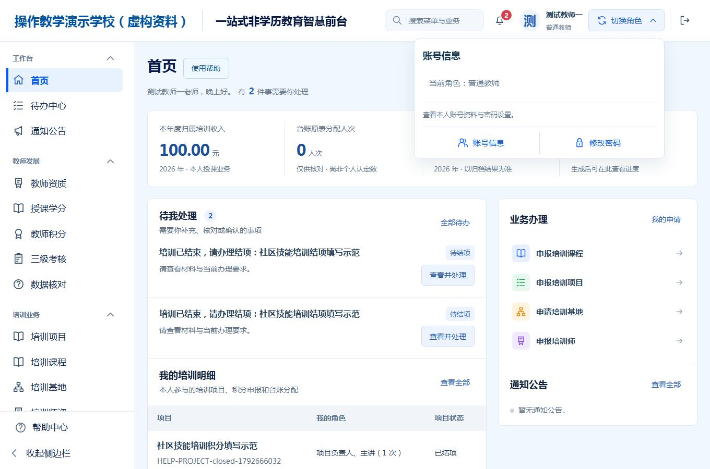
新手上手演示：登录、切换身份、申报课程、看退回意见、重新提交、找待办（虚构资料，未提交业务）。
用本人账号登录，确认当前身份和所属组织后再办业务。
完成标志：右上角显示的是本人姓名和正确身份。切换身份只改变你现在用哪个身份办事，不会多给权限。
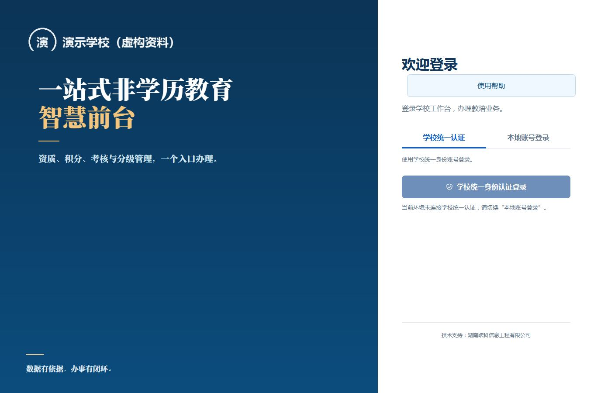
真实页面与填写说明演示（虚构资料）；本段未提交业务，不作为完整审批验收。
每天打开系统先看首页：待我处理、我的申请、我的超星课都在这里。
完成标志：知道今天有哪些事要办，并能从首页直接进入对应业务。
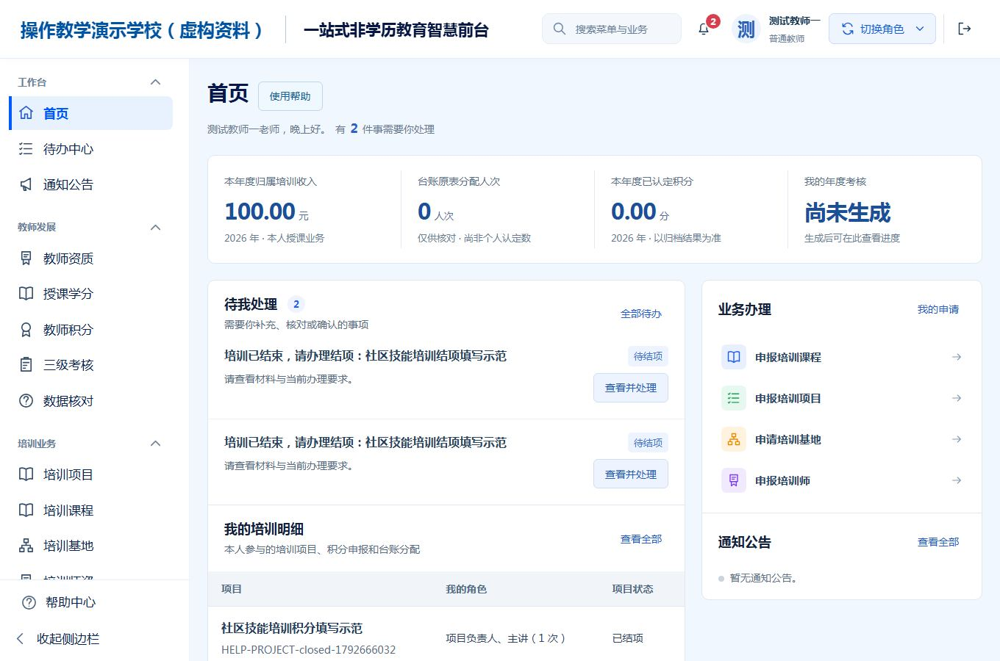
真实页面与填写说明演示（虚构资料）；本段未提交业务，不作为完整审批验收。
把“需要我办的事”和“我交的申请”分开看。
完成标志：办理后事项进入下一环节，或显示具体退回意见。点完按钮请回看结果。
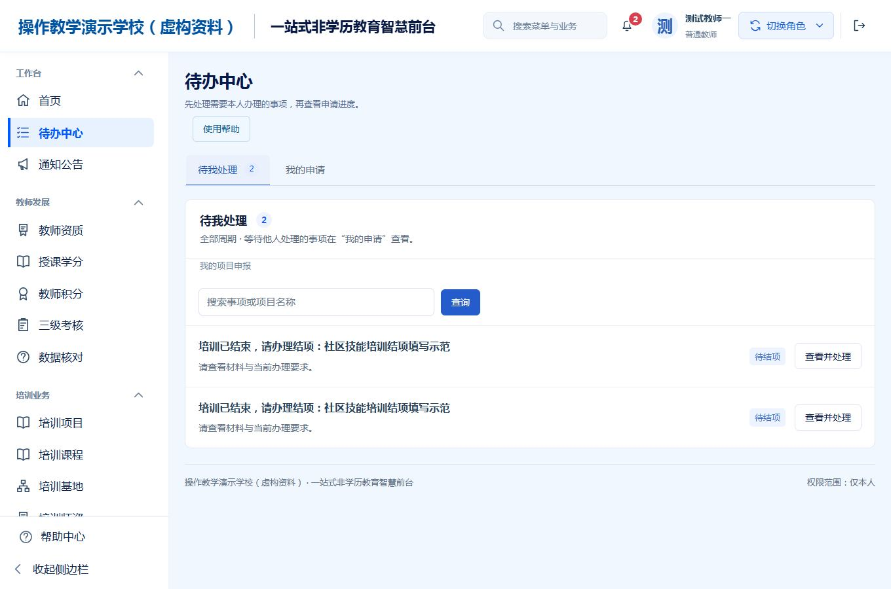
真实页面与填写说明演示（虚构资料）；本段未提交业务，不作为完整审批验收。
把适合面向社会开设的课程申报进学校培训课程库。
完成标志：学校审批通过后显示“已入培训课程库”。课程入库本身不产生积分，积分按你在培训项目里的授课人次另行认定。
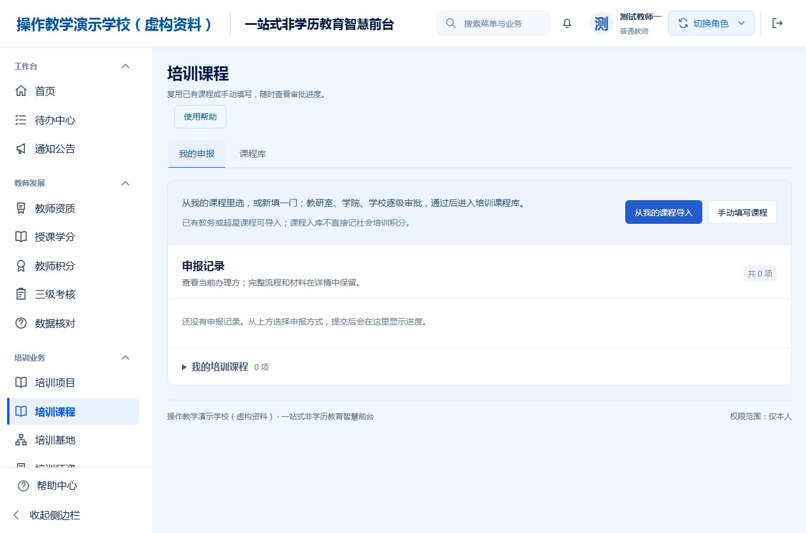
真实录屏：教师填写提交、教研室退回、教师补正重提、教研室与学院通过、学校归口复审及最终入库。使用独立虚构资料。
真实表单逐项讲解，说明字段含义、示例和条件；使用虚构资料，不提交业务。可通过章节直接跳到某一栏。
下列为采集时的表单条件。实际填写时，以当前选项变化后的必填提示为准。
| 填写项 | 含义、示例和限制 |
|---|---|
| 课程编号 当前必填 | 填写课程材料上的编号，例如 SOC-2026-001；被退回补正时保留原来的编号。 |
| 课程名称 当前必填 | 填写课程的完整名称，与课程材料一致，例如“社区营养配餐”。 |
| 学时 当前必填 | 按培训实际安排填写学时，可以填 0.5 学时这样的半学时；不要把分钟数直接填进来。 |
| 教学方式（单选） 当前必填 | 按实际教学组织方式选择，与培训方案一致。 |
| 思政属性（单选） 当前必填 | 按课程实际安排选择思政属性。 |
| 课程简介 当前选填 | 说明面向哪些社会学员、培训什么内容、学完能掌握什么技能。 最多 2000 字。 |
| 选择关联项目 当前选填 | 选择这门课所属的培训项目，系统自动带出项目编号，不用手填；页面标为选填时可以不关联。 |
| 培训包 当前选填 | 只有按成套教学包开发的课程才勾选。 |
| “一人一技”专项 当前选填 | 属于“一人一技”专项培训行动时勾选，勾选后要填写重点群体与行动对接。 |
| 重点群体与行动对接 当前选填 | 勾选“一人一技”专项时必填：写清面向哪些重点群体、怎样对接行动，例如“脱贫人口、返乡青年；结业后推荐就业”。 最多 1000 字。 |
| 课件审查状态 当前选填 | 学院已经做过课件审查、有审查记录时才勾选。 |
| 审查人或审查组 当前选填 | 勾选了课件审查状态时必填：填写实际做审查的人或审查组，例如“学院课件审查组”。 |
| 审查日期 当前选填 | 填写课件审查记录上的日期。 |
| 审查记录编号 当前选填 | 填写审查记录编号，方便核查；没有编号可以不填。 示例：KJ-2026-03。 |
| 课程封面（选填） | 可以上传一张课程展示图片，只用于列表展示，不能代替证明材料。 支持 PNG、JPG，单个不超过 5MB，只能上传 1 份。 |
| 本次申报说明 当前选填 | 写清申报依据，或需要审核人员了解的情况；被退回后重新提交时，说明按意见改了哪些地方。 最多 2000 字。 |
下列为采集时的表单条件。实际填写时，以当前选项变化后的必填提示为准。
| 填写项 | 含义、示例和限制 |
|---|---|
| 主讲教师（输入工号或姓名检索） 当前必填 | 输入主讲教师的姓名或工号搜索后选择，核对工号，不要选成同名的人。只能选你授权范围内的老师。 |
| 课程编号 当前必填 | 填写课程材料上的编号，例如 SOC-2026-001；被退回补正时保留原来的编号。 |
| 课程名称 当前必填 | 填写课程的完整名称，与课程材料一致，例如“社区营养配餐”。 |
| 学时 当前必填 | 按培训实际安排填写学时，可以填 0.5 学时这样的半学时；不要把分钟数直接填进来。 |
| 教学方式（单选） 当前必填 | 按实际教学组织方式选择，与培训方案一致。 |
| 思政属性（单选） 当前必填 | 按课程实际安排选择思政属性。 |
| 课程简介 当前选填 | 说明面向哪些社会学员、培训什么内容、学完能掌握什么技能。 最多 2000 字。 |
| 选择关联项目 当前选填 | 选择这门课所属的培训项目，系统自动带出项目编号，不用手填；页面标为选填时可以不关联。 |
| 培训包 当前选填 | 只有按成套教学包开发的课程才勾选。 |
| “一人一技”专项 当前选填 | 属于“一人一技”专项培训行动时勾选，勾选后要填写重点群体与行动对接。 |
| 重点群体与行动对接 当前选填 | 勾选“一人一技”专项时必填：写清面向哪些重点群体、怎样对接行动，例如“脱贫人口、返乡青年；结业后推荐就业”。 最多 1000 字。 |
| 课件审查状态 当前选填 | 学院已经做过课件审查、有审查记录时才勾选。 |
| 审查人或审查组 当前选填 | 勾选了课件审查状态时必填：填写实际做审查的人或审查组，例如“学院课件审查组”。 |
| 审查日期 当前选填 | 填写课件审查记录上的日期。 |
| 审查记录编号 当前选填 | 填写审查记录编号，方便核查；没有编号可以不填。 示例：KJ-2026-03。 |
| 课程封面（选填） | 可以上传一张课程展示图片，只用于列表展示，不能代替证明材料。 支持 PNG、JPG，单个不超过 5MB，只能上传 1 份。 |
| 本次申报说明 当前选填 | 写清申报依据，或需要审核人员了解的情况；被退回后重新提交时，说明按意见改了哪些地方。 最多 2000 字。 |
以本人为项目负责人申报培训项目，学院审批后由学校备案。
完成标志：学校备案后项目显示为“已备案”。只保存草稿不算备案。
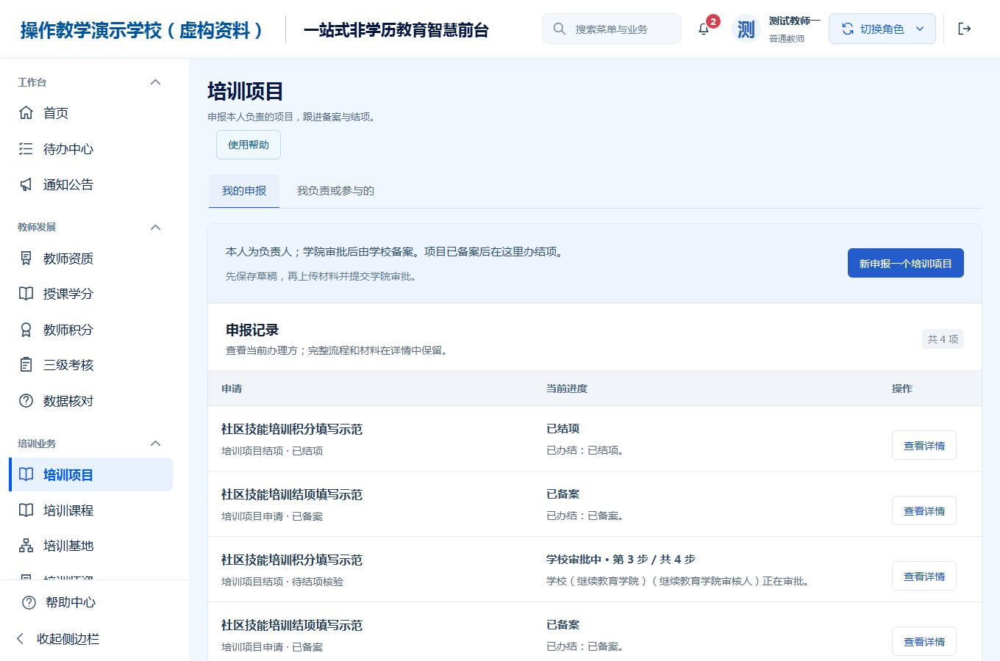
真实页面与填写说明演示（虚构资料）；本段未提交业务，不作为完整审批验收。
真实表单逐项讲解，说明字段含义、示例和条件；使用虚构资料，不提交业务。可通过章节直接跳到某一栏。
下列为采集时的表单条件。实际填写时，以当前选项变化后的必填提示为准。
| 填写项 | 含义、示例和限制 |
|---|---|
| 项目编号 当前必填 | 填写项目材料上的编号；不清楚时先向学院核实，不要自己编。 示例：SOC-2026-01。 |
| 项目名称 当前必填 | 填写项目的完整名称，与培训方案一致，例如“2026年社区茶艺公益培训”。 |
| 项目期次 当前必填 | 填写项目期次，例如“第一期”；同一项目分几期举办时按实际期次填写。 |
| 项目负责人 自动带出／只读 | 老师本人申报的项目，负责人就是本人，承办学院是本人所在学院，不用另外选择。 |
| 培训类别（单选） 当前必填 | 按项目实际性质选择培训类别。 |
| 受众群体 当前必填 | 按本次培训实际面向的人群勾选，可以多选；没有合适选项时在“其他”里补充。 可选：企业职工、社区居民、退役军人、新型职业农民、中小学教师、机关事业单位人员、待业及转岗人员、老年学员。 |
| 其他受众群体 当前选填 | 上面的选项都不合适时，在这里补充其他培训对象；没有可以不填。 最多 200 字。 |
| 服务面向类型 当前必填 | 按项目实际服务方向勾选，可以多选，相关依据在培训方案里说明。 可选：国家战略、区域发展、行业发展、其他。 |
| 高风险项目 当前选填 | 项目涉及高空、水上、用电、外出等高风险活动时勾选，并落实对应的审批和安全措施。 |
| 项目封面（选填） | 可以上传一张项目展示图片，只用于列表展示，不能代替证明材料。 支持 PNG、JPG，单个不超过 5MB，只能上传 1 份。 |
| 项目方案材料（可一次选多份） 当前选填 | 上传培训方案等项目材料。现在可以先不传，保存后在详情里补；提交审核前至少要有一份。 支持 PDF、PNG、JPG，单个不超过 10MB，可以一次选多个文件，最多 50 份（含已上传的）。 |
| 开始日期 当前必填 | 填写实际开始日期。 |
| 结束日期 当前必填 | 填写实际结束日期，不能早于开始日期。 |
| 预计收入（元，公益类填0） 当前必填 | 填写培训方案里的预计收入，单位为元；公益类项目填 0。结项时另填实际到账收入。 示例：0 或 30000。 不能填负数，最多保留两位小数。 |
| 预计人次 当前必填 | 填写方案预计的培训人次；结项时再核对实际人次。 示例：120。 不能填负数，只能填整数。 |
| 预期成果 当前必填 | 写清培训结束后学员能掌握什么技能、项目预计取得什么成果，以及怎样核验；不要只写“完成培训”。 示例：学员掌握基础茶艺，80%以上取得结业证书。 最多 200 字。 |
| “一人一技”专项 当前选填 | 属于“一人一技”专项培训行动时勾选，勾选后要填写重点群体与行动对接。 |
| 是否需要报省 当前选填 | 按上级和学校要求选择是否需要报省；选“需要”时要在下面写明依据。 |
| 报省要求与依据 当前选填 | 选择“需要报省”时必填：写明省级专项文件、报送口径或学校要求。 示例：湘人社〔2026〕12号文，须在结项后15个工作日内报送。 最多 2000 字。 |
| 重点群体与行动对接 当前选填 | 勾选“一人一技”专项时必填：写清面向哪些重点群体、怎样对接行动，例如“脱贫人口、返乡青年；结业后推荐就业”。 示例：脱贫人口、退役军人；对接“一人一技”行动。 最多 1000 字。 |
| 总学时 当前选填 | 填写项目的总学时；草稿可以先空着，提交学院审批前必须填。 示例：32。 不能填负数，可以填 0.5 学时这样的半学时。 |
| 视频资源总时长（分钟） 当前选填 | 填写项目建设的视频资源合计时长，单位是分钟；没有填 0。 示例：199。 不能填负数，只能填整数。 |
| 实践教学基地数量（个） 当前选填 | 填写项目使用的实践教学基地数量；没有填 0。 示例：2。 不能填负数，只能填整数。 |
| 教学实施方式 当前必填 | 按实际采用的教学方式勾选，可以多选，与培训方案一致。 可选：课堂教学、案例教学、现场教学、实地考察、交流研讨、实验实训、岗位实习、学习者互助、其他。 |
| 培训场地 当前必填 | 按实际上课地点选择校内培训基地、其他校内场所或校外；选校外要另外说明理由。 |
| 具体地点（基地名称、楼宇教室或外出地点） 当前必填 | 填写能找得到的具体地点，例如基地名称、楼栋教室或校外详细地址。 |
| 校外培训的外出理由（一事一议） 当前选填 | 培训场地选“校外”时必填：说明为什么不能在校内开展。 示例：茶叶采摘与制作必须在茶园现场教学，校内没有条件。 最多 1000 字。 |
| 议定文号或会议日期 当前选填 | 培训场地选“校外”时必填：填写学校一事一议的会议日期或文号。 示例：校长办公会 2026-08-20 或 校办〔2026〕15号。 |
| 核算方式（单选） 当前必填 | 按学校确认的计分方式选择模块式或人天式，与项目实际组织方式一致。 |
| 标准班类型（单选） 当前必填 | 按项目实际内容选择技术类、讲座类等标准班类型；这一项影响积分计算。 |
| 项目层级（单选） 当前必填 | 按认定依据选择项目层级：企业定制通常选市级，社区、免费帮扶通常选校级；不要自行提高等级。 |
| 授课场景（单选） 当前必填 | 按实际情况选择是否异地送教、全天实操或脱产培训，并保留相应依据。 |
| 专项层级认定依据 当前选填 | 项目层级高于常规时必填：填写正式认定文件名称和文号，提交后由归口核验。 示例：省人社厅专项培训认定文件〔2026〕8号。 最多 1000 字。 |
| 随项目备案的辅助积分细则 当前选填 | 写明随项目备案的辅助工作积分细则：哪些工作、每天多少分、依据是什么。 示例：班主任每天0.5分，每人每天不超过1分。 |
| 个人辅助积分每日上限 当前选填 | 填写学校确认的个人辅助积分每日上限，不要照抄示例。 示例：1。 不能填负数，最多保留两位小数。 |
| 申报说明 当前必填 | 写清申报的理由，以及需要审核人员了解的情况；没有特别情况可以简要说明。 最多 2000 字。 |
| 依据说明或材料编号（选填） | 填写依据文件名称、文号或材料编号，方便审核人员查找；不要填写密码或密钥。 示例：学院会议纪要〔2026〕3号、协议编号、材料编号。 最多 2000 字。 |
下列为采集时的表单条件。实际填写时，以当前选项变化后的必填提示为准。
| 填写项 | 含义、示例和限制 |
|---|---|
| 项目编号 当前必填 | 填写项目材料上的编号；不清楚时先向学院核实，不要自己编。 示例：SOC-2026-01。 |
| 项目名称 当前必填 | 填写项目的完整名称，与培训方案一致，例如“2026年社区茶艺公益培训”。 |
| 项目期次 当前必填 | 填写项目期次，例如“第一期”；同一项目分几期举办时按实际期次填写。 |
| 承办学院 当前必填 | 选择这项业务所属的学院。 |
| 项目负责人（输入工号或姓名检索） 当前必填 | 输入项目负责人的姓名或工号搜索后选择。只能选你授权范围内的老师。 |
| 培训类别（单选） 当前必填 | 按项目实际性质选择培训类别。 |
| 受众群体 当前必填 | 按本次培训实际面向的人群勾选，可以多选；没有合适选项时在“其他”里补充。 可选：企业职工、社区居民、退役军人、新型职业农民、中小学教师、机关事业单位人员、待业及转岗人员、老年学员。 |
| 其他受众群体 当前选填 | 上面的选项都不合适时，在这里补充其他培训对象；没有可以不填。 最多 200 字。 |
| 服务面向类型 当前必填 | 按项目实际服务方向勾选，可以多选，相关依据在培训方案里说明。 可选：国家战略、区域发展、行业发展、其他。 |
| 高风险项目 当前选填 | 项目涉及高空、水上、用电、外出等高风险活动时勾选，并落实对应的审批和安全措施。 |
| 项目封面（选填） | 可以上传一张项目展示图片，只用于列表展示，不能代替证明材料。 支持 PNG、JPG，单个不超过 5MB，只能上传 1 份。 |
| 项目方案材料（可一次选多份） 当前选填 | 上传培训方案等项目材料。现在可以先不传，保存后在详情里补；提交审核前至少要有一份。 支持 PDF、PNG、JPG，单个不超过 10MB，可以一次选多个文件，最多 50 份（含已上传的）。 |
| 开始日期 当前必填 | 填写实际开始日期。 |
| 结束日期 当前必填 | 填写实际结束日期，不能早于开始日期。 |
| 预计收入（元，公益类填0） 当前必填 | 填写培训方案里的预计收入，单位为元；公益类项目填 0。结项时另填实际到账收入。 示例：0 或 30000。 不能填负数，最多保留两位小数。 |
| 预计人次 当前必填 | 填写方案预计的培训人次；结项时再核对实际人次。 示例：120。 不能填负数，只能填整数。 |
| 预期成果 当前必填 | 写清培训结束后学员能掌握什么技能、项目预计取得什么成果，以及怎样核验；不要只写“完成培训”。 示例：学员掌握基础茶艺，80%以上取得结业证书。 最多 200 字。 |
| “一人一技”专项 当前选填 | 属于“一人一技”专项培训行动时勾选，勾选后要填写重点群体与行动对接。 |
| 是否需要报省 当前选填 | 按上级和学校要求选择是否需要报省；选“需要”时要在下面写明依据。 |
| 报省要求与依据 当前选填 | 选择“需要报省”时必填：写明省级专项文件、报送口径或学校要求。 示例：湘人社〔2026〕12号文，须在结项后15个工作日内报送。 最多 2000 字。 |
| 重点群体与行动对接 当前选填 | 勾选“一人一技”专项时必填：写清面向哪些重点群体、怎样对接行动，例如“脱贫人口、返乡青年；结业后推荐就业”。 示例：脱贫人口、退役军人；对接“一人一技”行动。 最多 1000 字。 |
| 总学时 当前选填 | 填写项目的总学时；草稿可以先空着，提交学院审批前必须填。 示例：32。 不能填负数，可以填 0.5 学时这样的半学时。 |
| 视频资源总时长（分钟） 当前选填 | 填写项目建设的视频资源合计时长，单位是分钟；没有填 0。 示例：199。 不能填负数，只能填整数。 |
| 实践教学基地数量（个） 当前选填 | 填写项目使用的实践教学基地数量；没有填 0。 示例：2。 不能填负数，只能填整数。 |
| 教学实施方式 当前必填 | 按实际采用的教学方式勾选，可以多选，与培训方案一致。 可选：课堂教学、案例教学、现场教学、实地考察、交流研讨、实验实训、岗位实习、学习者互助、其他。 |
| 培训场地 当前必填 | 按实际上课地点选择校内培训基地、其他校内场所或校外；选校外要另外说明理由。 |
| 具体地点（基地名称、楼宇教室或外出地点） 当前必填 | 填写能找得到的具体地点，例如基地名称、楼栋教室或校外详细地址。 |
| 校外培训的外出理由（一事一议） 当前选填 | 培训场地选“校外”时必填：说明为什么不能在校内开展。 示例：茶叶采摘与制作必须在茶园现场教学，校内没有条件。 最多 1000 字。 |
| 议定文号或会议日期 当前选填 | 培训场地选“校外”时必填：填写学校一事一议的会议日期或文号。 示例：校长办公会 2026-08-20 或 校办〔2026〕15号。 |
| 核算方式（单选） 当前必填 | 按学校确认的计分方式选择模块式或人天式，与项目实际组织方式一致。 |
| 标准班类型（单选） 当前必填 | 按项目实际内容选择技术类、讲座类等标准班类型；这一项影响积分计算。 |
| 项目层级（单选） 当前必填 | 按认定依据选择项目层级：企业定制通常选市级，社区、免费帮扶通常选校级；不要自行提高等级。 |
| 授课场景（单选） 当前必填 | 按实际情况选择是否异地送教、全天实操或脱产培训，并保留相应依据。 |
| 专项层级认定依据 当前选填 | 项目层级高于常规时必填：填写正式认定文件名称和文号，提交后由归口核验。 示例：省人社厅专项培训认定文件〔2026〕8号。 最多 1000 字。 |
| 随项目备案的辅助积分细则 当前选填 | 写明随项目备案的辅助工作积分细则：哪些工作、每天多少分、依据是什么。 示例：班主任每天0.5分，每人每天不超过1分。 |
| 个人辅助积分每日上限 当前选填 | 填写学校确认的个人辅助积分每日上限，不要照抄示例。 示例：1。 不能填负数，最多保留两位小数。 |
| 申报说明 当前必填 | 写清申报的理由，以及需要审核人员了解的情况；没有特别情况可以简要说明。 最多 2000 字。 |
| 依据说明或材料编号（选填） | 填写依据文件名称、文号或材料编号，方便审核人员查找；不要填写密码或密钥。 示例：学院会议纪要〔2026〕3号、协议编号、材料编号。 最多 2000 字。 |
登记实践教学基地或思政实践教学基地，提交审核后进入基地清单。
完成标志：学院、学校审批通过后，基地出现在“基地清单”里。
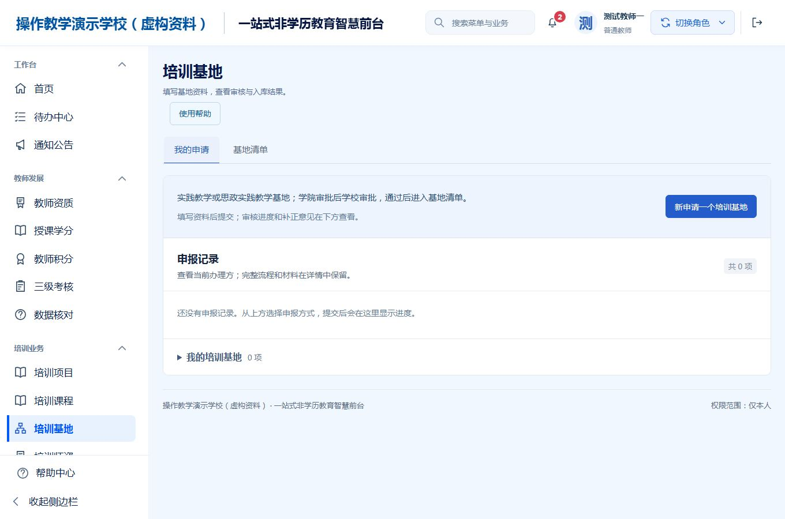
真实页面与填写说明演示（虚构资料）；本段未提交业务，不作为完整审批验收。
真实表单逐项讲解，说明字段含义、示例和条件；使用虚构资料，不提交业务。可通过章节直接跳到某一栏。
下列为采集时的表单条件。实际填写时，以当前选项变化后的必填提示为准。
| 填写项 | 含义、示例和限制 |
|---|---|
| 来源编号 当前必填 | 填写共建协议编号或学院登记编号，例如 JD-2026-001。 |
| 基地名称 当前必填 | 填写基地的完整名称，与共建协议或认定文件一致。 示例：湘茶思政实践教学基地。 |
| 基地负责人 当前选填 | 校内基地填学校这边的负责人，校外基地填共建单位联系人；不填时显示为申请人。 示例：张老师。 |
| 实践教学基地 当前选填 | 基地实际用于实践教学时勾选，可以和思政实践教学同时勾选。 |
| 思政实践教学基地 当前选填 | 基地实际承担思政实践教学时勾选，并保留建设或使用依据。 |
| 基地级别（单选） 当前必填 | 按认定文件选择基地级别，不要自行提高等级。 |
| 校内 / 校外（单选） 当前必填 | 按基地实际位置选择校内或校外；选校外时必须填写共建单位。 |
| 共建单位 当前选填 | 选择校外基地时必须填写共建单位的全称；校内基地不用填。 |
| 设立日期 当前必填 | 填写基地实际设立的日期。 |
| 认定日期 当前选填 | 填写学校或上级正式认定的日期；还没有认定可以不填。不要和设立日期、审批日期混在一起。 |
| 具体地点 当前选填 | 填写基地所在的校区、楼栋或校外详细地址，能让人找到。 |
| 基地封面（选填） | 可以上传一张基地展示图片，场地照片也可以以后在基地详情里继续添加；封面不能代替认定材料。 支持 PNG、JPG，单个不超过 5MB，只能上传 1 份。 |
| 基地认定依据 当前必填 | 填写共建协议、学校发文或学院会议纪要等正式依据的名称和文号。 最多 200 字。 |
| 本次申请说明 当前选填 | 补充说明设立用途或本次申请事项；认定依据请填在上面的“基地认定依据”里。 最多 2000 字。 |
下列为采集时的表单条件。实际填写时，以当前选项变化后的必填提示为准。
| 填写项 | 含义、示例和限制 |
|---|---|
| 基地负责人（输入工号或姓名检索） 当前必填 | 输入负责老师的姓名或工号搜索后选择，核对工号。只能选你授权范围内的老师。 |
| 来源编号 当前必填 | 填写共建协议编号或学院登记编号，例如 JD-2026-001。 |
| 基地名称 当前必填 | 填写基地的完整名称，与共建协议或认定文件一致。 示例：湘茶思政实践教学基地。 |
| 基地负责人 当前选填 | 校内基地填学校这边的负责人，校外基地填共建单位联系人；不填时显示为申请人。 示例：张老师。 |
| 实践教学基地 当前选填 | 基地实际用于实践教学时勾选，可以和思政实践教学同时勾选。 |
| 思政实践教学基地 当前选填 | 基地实际承担思政实践教学时勾选，并保留建设或使用依据。 |
| 基地级别（单选） 当前必填 | 按认定文件选择基地级别，不要自行提高等级。 |
| 校内 / 校外（单选） 当前必填 | 按基地实际位置选择校内或校外；选校外时必须填写共建单位。 |
| 共建单位 当前选填 | 选择校外基地时必须填写共建单位的全称；校内基地不用填。 |
| 设立日期 当前必填 | 填写基地实际设立的日期。 |
| 认定日期 当前选填 | 填写学校或上级正式认定的日期；还没有认定可以不填。不要和设立日期、审批日期混在一起。 |
| 具体地点 当前选填 | 填写基地所在的校区、楼栋或校外详细地址，能让人找到。 |
| 基地封面（选填） | 可以上传一张基地展示图片，场地照片也可以以后在基地详情里继续添加；封面不能代替认定材料。 支持 PNG、JPG，单个不超过 5MB，只能上传 1 份。 |
| 基地认定依据 当前必填 | 填写共建协议、学校发文或学院会议纪要等正式依据的名称和文号。 最多 200 字。 |
| 本次申请说明 当前选填 | 补充说明设立用途或本次申请事项；认定依据请填在上面的“基地认定依据”里。 最多 2000 字。 |
老师本人申报校内培训师，学院审核后由组织人事部认定。
完成标志：组织人事部认定后才算取得培训师资格，只提交还不算。
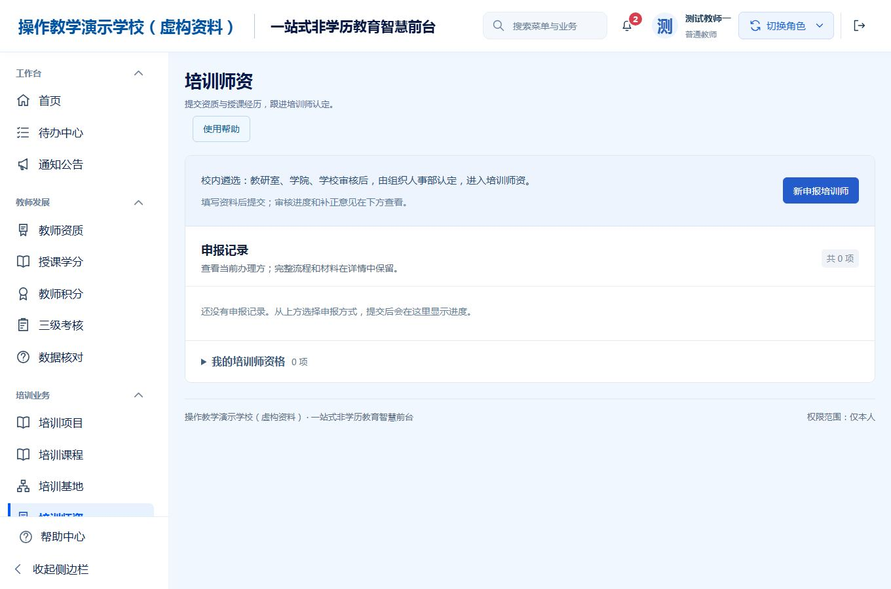
真实页面与填写说明演示（虚构资料）；本段未提交业务，不作为完整审批验收。
真实表单逐项讲解，说明字段含义、示例和条件；使用虚构资料，不提交业务。可通过章节直接跳到某一栏。
下列为采集时的表单条件。实际填写时，以当前选项变化后的必填提示为准。
| 填写项 | 含义、示例和限制 |
|---|---|
| 职称或职务 当前选填 | 填写本人现有的职称、职业技能等级或岗位，与资质材料一致。 |
| 专业特长 当前选填 | 填写能承担培训的专业特长，例如茶艺、电商运营、家政服务；和下面的“培训业务类别”分开填。 |
| 培训业务类别（可多选） 当前必填 | 勾选本人能够承担的培训业务类别，可以多选；具体专业特长在上面单独填写。 可选：补贴性培训、企业定制培训、社区公益培训、乡村帮扶培训、其他非学历培训、“一人一技”专项。 |
| 资格依据 当前必填 | 说明你的职称、职业资格或行业经历，以及这些能支持你承担哪些培训方向。 最多 2000 字。 |
| 培训师头像（选填） | 可以上传一张本人照片，只用于师资库展示，不能代替证明材料。 支持 PNG、JPG，单个不超过 5MB，只能上传 1 份。 |
| 授课经历 当前选填 | 写清近年的授课项目、培训期数和学员人次，必要时上传依据。 最多 2000 字。 |
| 本次申报说明 当前选填 | 写清申报依据，或需要审核人员了解的情况；被退回后重新提交时，说明按意见改了哪些地方。 最多 2000 字。 |
学院、学校按权限查询、审批、备案培训项目并办理结项。
完成标志：项目显示“已结项”。具体由谁审核，以项目详情里的办理进度为准。结项通过后，授课老师可以在“教师积分”的“申报与认定”里申报本人积分。
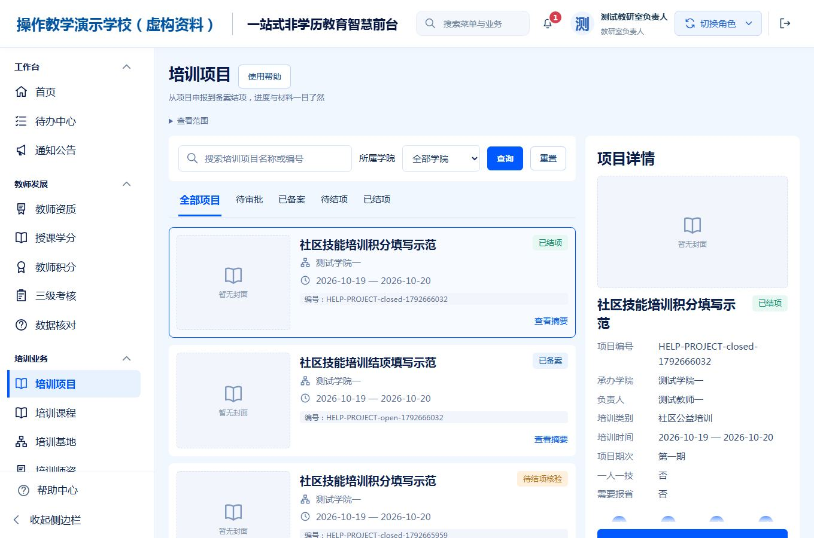
真实页面与填写说明演示（虚构资料）；本段未提交业务，不作为完整审批验收。
真实表单逐项讲解，说明字段含义、示例和条件；使用虚构资料，不提交业务。可通过章节直接跳到某一栏。
下列为采集时的表单条件。实际填写时，以当前选项变化后的必填提示为准。
| 填写项 | 含义、示例和限制 |
|---|---|
| 结项日期 当前必填 | 填写实际结项日期；系统已按培训结束日期带出，实际不同时再改。 |
| 满意度（百分比） 当前必填 | 填写满意度调查的实际百分比，例如 96 表示 96%；不要填 0.96，也不要填预期值。 不能填负数，不能大于 100，最多保留两位小数。 |
| 培训地点类型 当前必填 | 按实际情况选择校内或校外；系统已按项目申报时的培训场地带出，不同时再改。 可选：校内、校外。 |
| 成果报告 当前必填 | 说明完成了哪些培训内容、取得了哪些成果，以及对应的佐证材料。 最多 200 字。 |
| 整改报告与期限 当前选填 | 写清存在的问题、整改措施、责任人、完成期限和整改结果；还没整改完的，说明目前进展和后续安排。 最多 2000 字。 |
| 整改办理期限 当前选填 | 有整改要求时填写整改完成期限，按审核意见确定。 |
| 财务确认到账收入（元） 当前必填 | 按财务结算依据填写实际到账收入，单位为元。 不能填负数，最多保留两位小数。 |
| 财务确认的资金来源 当前选填 | 按财务确认的资金来源选择；政府专项资金和其他培训收入的核验要求不同。 |
| 财务核验凭据 当前必填 | 填写可追溯的财务凭证号或结算依据。 |
| 隐性成本（元） 当前必填 | 填写已核实的隐性成本金额，单位为元，和财务依据一致；没有填 0。 不能填负数，最多保留两位小数。 |
| 经费结算日期 当前选填 | 填写实际经费结算日期，不要用申报日期代替。 |
| 学校留存（元） 当前选填 | 填写财务核实的学校留存金额，单位为元；页面会提示收入分配比例，这里填金额不填百分数。 不能填负数，最多保留两位小数。 |
| 校内人员支出（元） 当前选填 | 填写到账收入和学校留存后自动算出（到账收入 × 80% − 学校留存），使项目公用正好为收入的 20%；不用手填。 不能填负数，最多保留两位小数。 |
| 政府专项主管部门规定及财务核验依据 当前选填 | 资金来源是政府专项且有收入时必填：写明主管部门的规定和财务核验依据；专项资金专款专用，不套用其他收入的分配比例。 |
| 结项材料核对 当前选填 | 老师提交结项不用勾。学校核验时点“同意”，系统会把下面 8 项材料自动记为已核对；材料不齐时请点“退回”，写明缺什么。 可选：培训方案、学校制式备案登记表、学员名册、实名签到、学时记录、培训过程影像、结业考核、培训成果。 |
| 办理说明 当前必填 | 写清这次操作的原因和依据，会记入操作记录，以后可以查到。 最多 2000 字。 |
| 依据说明或材料编号（选填） | 填写依据文件名称、文号或材料编号，方便审核人员查找；不要填写密码或密钥。 示例：学院会议纪要〔2026〕3号、协议编号、材料编号。 最多 2000 字。 |
查看已入库的培训课程，有权限的人员可以登记课程。
完成标志：课程登记成功，可在课程库里找到。课程统计不代表学员实际学习情况。
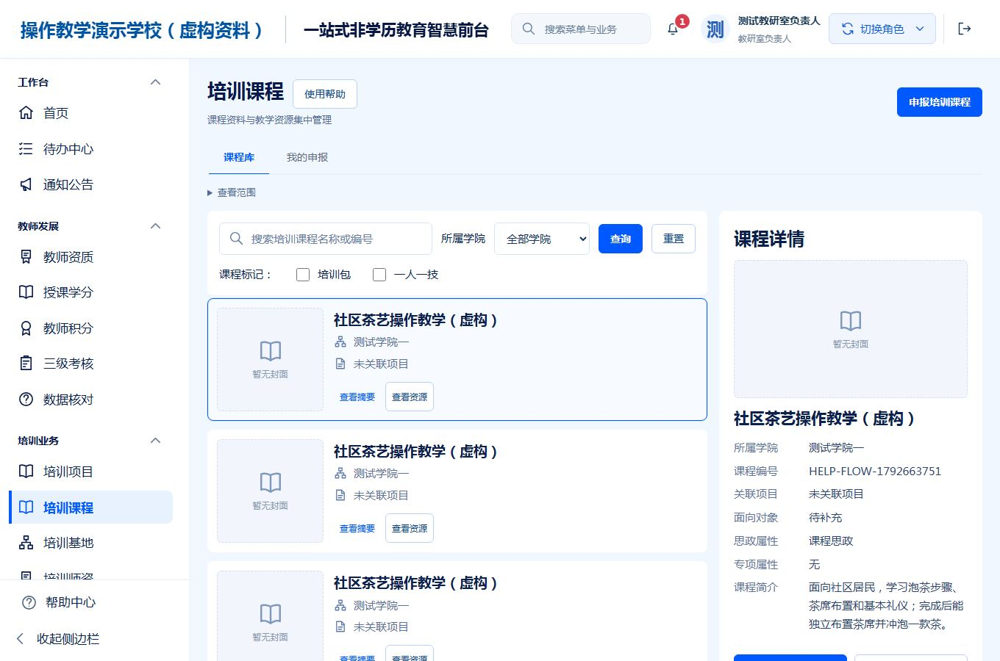
真实页面与填写说明演示（虚构资料）；本段未提交业务，不作为完整审批验收。
真实表单逐项讲解，说明字段含义、示例和条件；使用虚构资料，不提交业务。可通过章节直接跳到某一栏。
下列为采集时的表单条件。实际填写时，以当前选项变化后的必填提示为准。
| 填写项 | 含义、示例和限制 |
|---|---|
| 课程编号 当前必填 | 填写课程材料上的编号，例如 SOC-2026-001；被退回补正时保留原来的编号。 |
| 课程名称 当前必填 | 填写课程的完整名称，与课程材料一致，例如“社区营养配餐”。 |
| 选择关联项目 当前必填 | 选择这门课所属的培训项目，系统自动带出项目编号，不用手填；页面标为选填时可以不关联。 |
| 学时 当前选填 | 按培训实际安排填写学时，可以填 0.5 学时这样的半学时；不要把分钟数直接填进来。 |
| 教学方式 当前必填 | 按实际教学组织方式选择，与培训方案一致。 |
| 思政属性 当前必填 | 按课程实际安排选择思政属性。 |
| 培训包 当前选填 | 只有按成套教学包开发的课程才勾选。 |
| “一人一技”专项 当前选填 | 属于“一人一技”专项培训行动时勾选，勾选后要填写重点群体与行动对接。 |
| 重点群体与行动对接 当前选填 | 勾选“一人一技”专项时必填：写清面向哪些重点群体、怎样对接行动，例如“脱贫人口、返乡青年；结业后推荐就业”。 |
| 主讲教师（输入工号或姓名检索） 当前必填 | 输入主讲教师的姓名或工号搜索后选择，核对工号，不要选成同名的人。只能选你授权范围内的老师。 |
| 课件审查 当前选填 | 学院已经做过课件审查、有审查记录时才勾选。 |
| 审查人 当前选填 | 填写实际做课件审查的人或审查组。 |
| 审查日期 当前选填 | 填写课件审查记录上的日期。 |
| 办理说明 当前必填 | 写清这次操作的原因和依据，会记入操作记录，以后可以查到。 最多 2000 字。 |
| 依据说明或材料编号（选填） | 填写依据文件名称、文号或材料编号，方便审核人员查找；不要填写密码或密钥。 示例：学院会议纪要〔2026〕3号、协议编号、材料编号。 最多 2000 字。 |
查看和维护授权范围内的培训基地。
完成标志：新申请和已入库基地分开显示，同一基地不要重复申请。
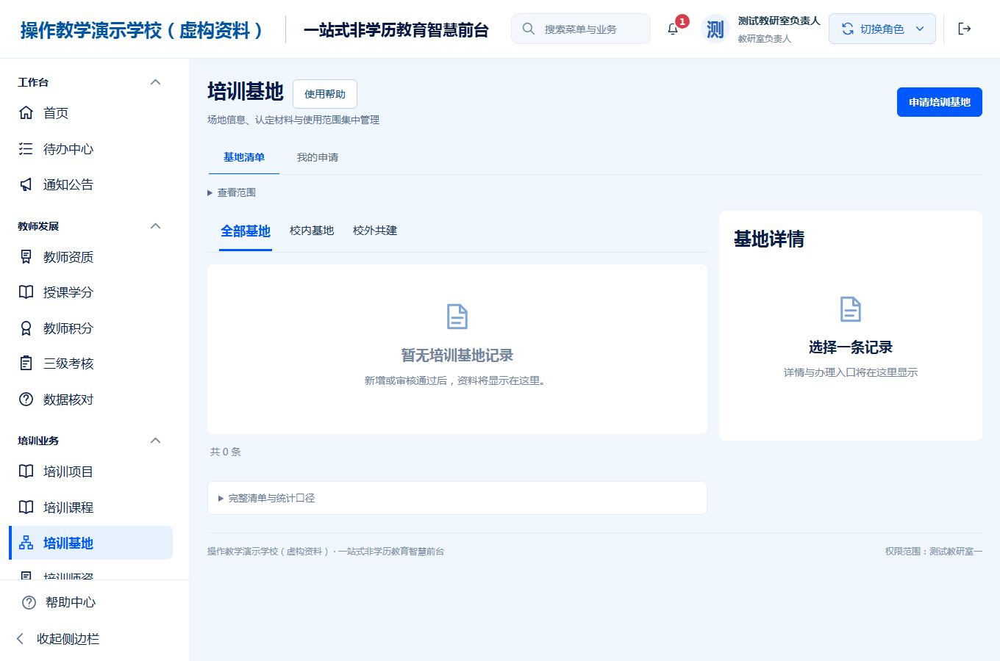
真实页面与填写说明演示（虚构资料）；本段未提交业务，不作为完整审批验收。
学院登记外聘培训师，按配置的职责审核备案；校内老师走本人申报。
完成标志：备案完成后出现在师资库，审核意见可追溯。
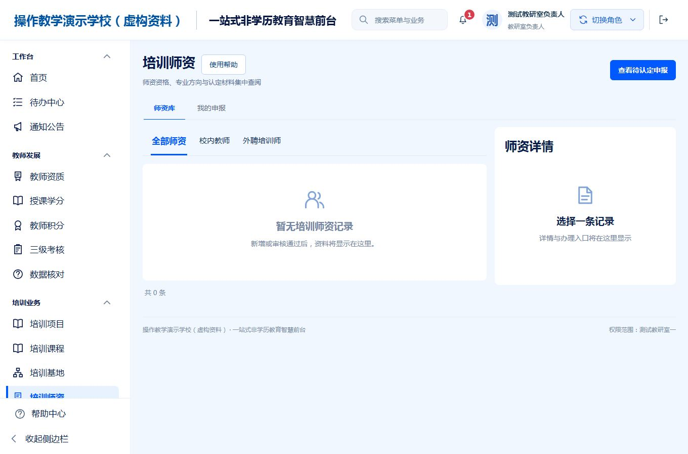
真实页面与填写说明演示（虚构资料）；本段未提交业务，不作为完整审批验收。
真实表单逐项讲解，说明字段含义、示例和条件；使用虚构资料，不提交业务。可通过章节直接跳到某一栏。
下列为采集时的表单条件。实际填写时，以当前选项变化后的必填提示为准。
| 填写项 | 含义、示例和限制 |
|---|---|
| 姓名 当前必填 | 填写本人身份证件上的真实姓名。 |
| 工作单位 当前必填 | 填写外聘人员现在任职单位的全称，与资质和授课经历材料一致。 |
| 职称或职务 当前选填 | 填写本人现有的职称、职业技能等级或岗位，与资质材料一致。 |
| 专业特长 当前选填 | 填写能承担培训的专业特长，例如茶艺、电商运营、家政服务；和下面的“培训业务类别”分开填。 |
| 培训业务类别（可多选） 当前必填 | 勾选本人能够承担的培训业务类别，可以多选；具体专业特长在上面单独填写。 可选：补贴性培训、企业定制培训、社区公益培训、乡村帮扶培训、其他非学历培训、“一人一技”专项。 |
| 资格依据 当前必填 | 说明你的职称、职业资格或行业经历，以及这些能支持你承担哪些培训方向。 最多 2000 字。 |
| 培训师头像（选填） | 可以上传一张本人照片，只用于师资库展示，不能代替证明材料。 支持 PNG、JPG，单个不超过 5MB，只能上传 1 份。 |
| 授课经历 当前选填 | 写清近年的授课项目、培训期数和学员人次，必要时上传依据。 最多 2000 字。 |
| 本次申报说明 当前选填 | 写清申报依据，或需要审核人员了解的情况；被退回后重新提交时，说明按意见改了哪些地方。 最多 2000 字。 |
核对本人参与的培训项目、授课和参训记录。
完成标志：记录核对无误。积分要另外申报、审批并归档后才入账。
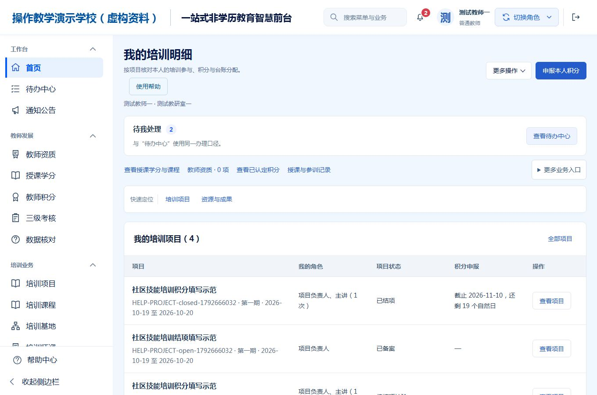
真实页面与填写说明演示（虚构资料）；本段未提交业务，不作为完整审批验收。
按项目和学校制度申报、审核、归档培训积分。
完成标志：学校认定通过后积分才进入个人台账。还在审核中的积分不会显示为到账。
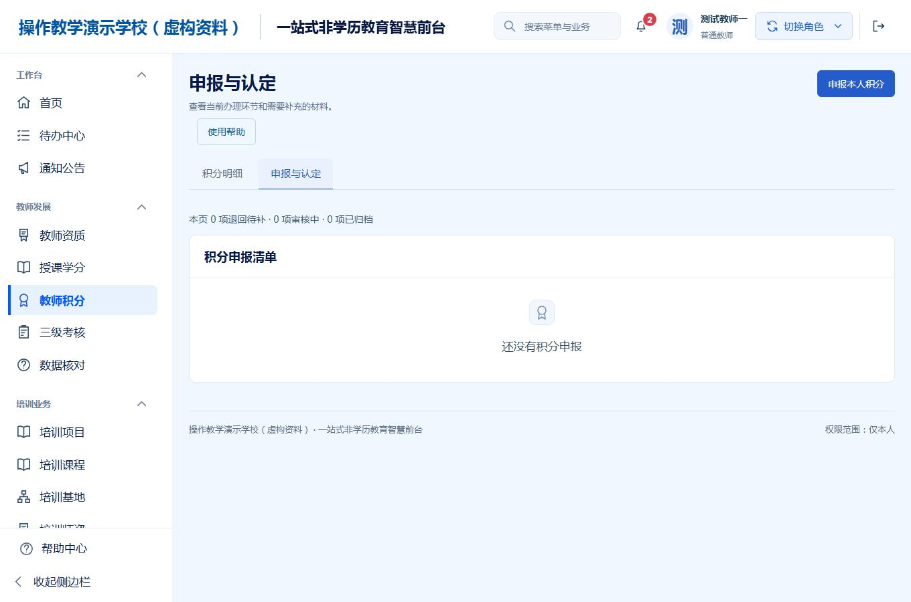
真实页面与填写说明演示（虚构资料）；本段未提交业务，不作为完整审批验收。
真实表单逐项讲解，说明字段含义、示例和条件；使用虚构资料，不提交业务。可通过章节直接跳到某一栏。
下列为采集时的表单条件。实际填写时，以当前选项变化后的必填提示为准。
| 填写项 | 含义、示例和限制 |
|---|---|
| 选择关联项目 当前必填 | 选择本人参与、并且已经满足申报条件的培训项目；列表里没有时，先到“我的培训明细”核对项目是否已结项。 |
| 认定周期 当前必填 | 选择本次申报、统计或考核对应的周期；周期不一定等于自然年或学年。 |
| 制度执行口径 当前必填 | 选择本年度经学校确认并适用的制度执行口径版本。 |
| 学校制式积分认定表及其他材料（可一次选多份） 当前必填 | 上传填好并签字的学校制式积分认定表，以及其他证明材料。每份单独上传并显示结果，失败的只需补传那一份。 支持 PDF、PNG、JPG，单个不超过 10MB，可以一次选多个文件，最多 50 份（含已上传的）。 |
| 申报说明 当前必填 | 写清申报的理由，以及需要审核人员了解的情况；没有特别情况可以简要说明。 最多 2000 字。 |
| 依据说明或材料编号（选填） | 填写依据文件名称、文号或材料编号，方便审核人员查找；不要填写密码或密钥。 示例：学院会议纪要〔2026〕3号、协议编号、材料编号。 最多 2000 字。 |
登记本人资质证书、有效期和证书材料。
完成标志：审核通过后显示资质状态；快到期时及时更新证书。
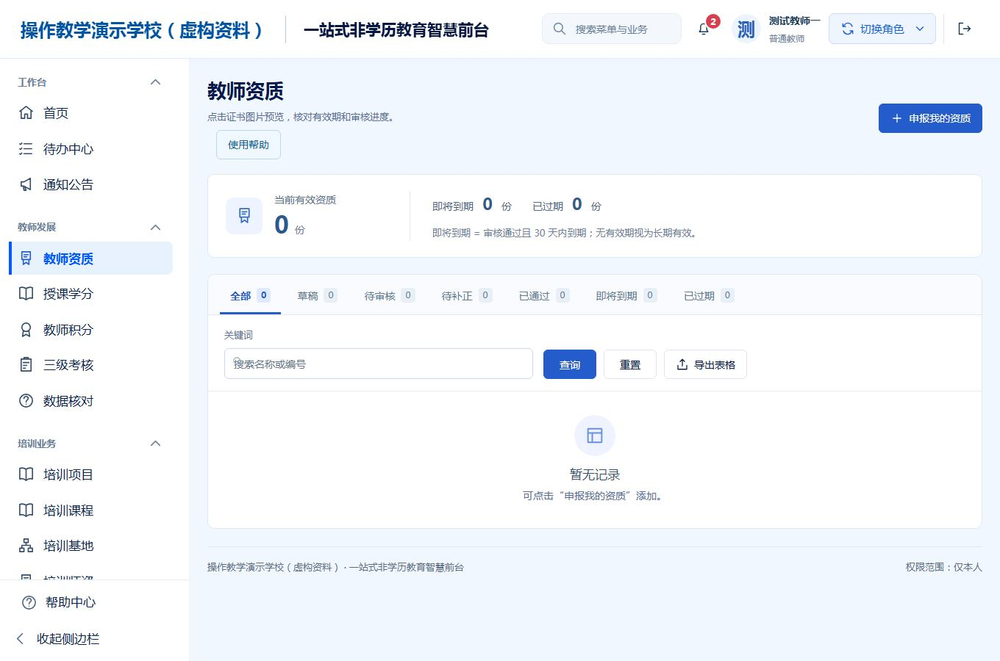
真实页面与填写说明演示（虚构资料）；本段未提交业务，不作为完整审批验收。
真实表单逐项讲解，说明字段含义、示例和条件；使用虚构资料，不提交业务。可通过章节直接跳到某一栏。
下列为采集时的表单条件。实际填写时，以当前选项变化后的必填提示为准。
| 填写项 | 含义、示例和限制 |
|---|---|
| 资质类别 当前必填 | 选择证书属于哪一类资质。 可选：职业资格、教学资质。 |
| 证书名称 当前必填 | 按证书原件填写证书全称。 |
| 证书编号 当前必填 | 按证书原件填写完整编号，保留字母和前面的 0。 |
| 发证机构 当前必填 | 填写证书上的发证单位全称。 |
| 取得日期 当前必填 | 填写证书上的取得日期。 |
| 有效期至 当前必填 | 选择证书的到期日期；没有到期日就勾选“长期有效”。考核时按周期最后一天证书是否有效来判断。 |
| 长期有效 当前选填 | 证书没有到期日时勾选，勾选后不用填“有效期至”。 |
| 证书图片或扫描件（可一次选多份） 当前选填 | 上传清晰完整的证书照片或扫描件，可以一次选多张。草稿可以以后再补传，提交审核前必须至少有一份。 支持 PDF、PNG、JPG，单个不超过 10MB，可以一次选多个文件，最多 20 份（含已上传的）。 |
| 申报说明 当前必填 | 写清申报的理由，以及需要审核人员了解的情况；没有特别情况可以简要说明。 最多 2000 字。 |
查看教务和超星同步来的课程、学分和认定状态。
完成标志：已认定和待认定分开显示。缺学分不等于零学分，请联系教务核对。
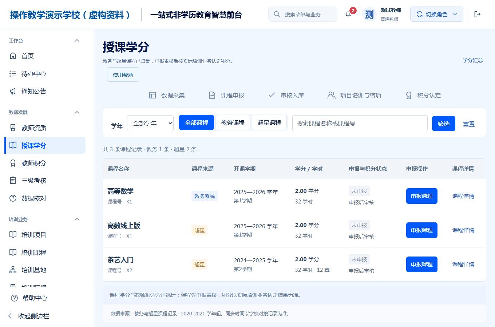
真实页面与填写说明演示（虚构资料）；本段未提交业务，不作为完整审批验收。
院长指定本院学院经办人和各教研室负责人，经办人代院长办理学院一级的审批。
完成标志：经办人登录后在右上角切换到“经办人”身份办理，每条记录写明“经办人代 某院长 办理”；院长本人的申请交学校审批。
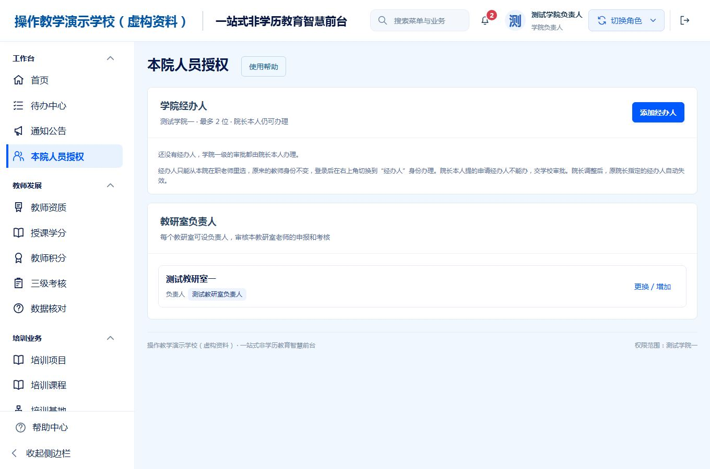
真实页面与填写说明演示（虚构资料）；本段未提交业务，不作为完整审批验收。
审批学校老师的教务、超星课程：老师在“授课学分”里对同步来的课申请认定，再依次经教研室审核、学院审批、学校认定，按学时计积分。
完成标志：学校认定后积分记入老师个人积分，课程进入老师的培训课程库；学分学时在源头变化后会从教研室重新审核。
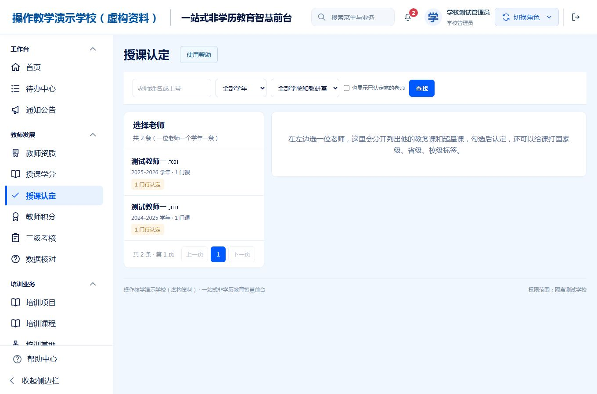
真实页面与填写说明演示（虚构资料）；本段未提交业务，不作为完整审批验收。
查看积分来源、流水和计算依据。
完成标志：周期台账核对完成，历史记录不会被直接覆盖。
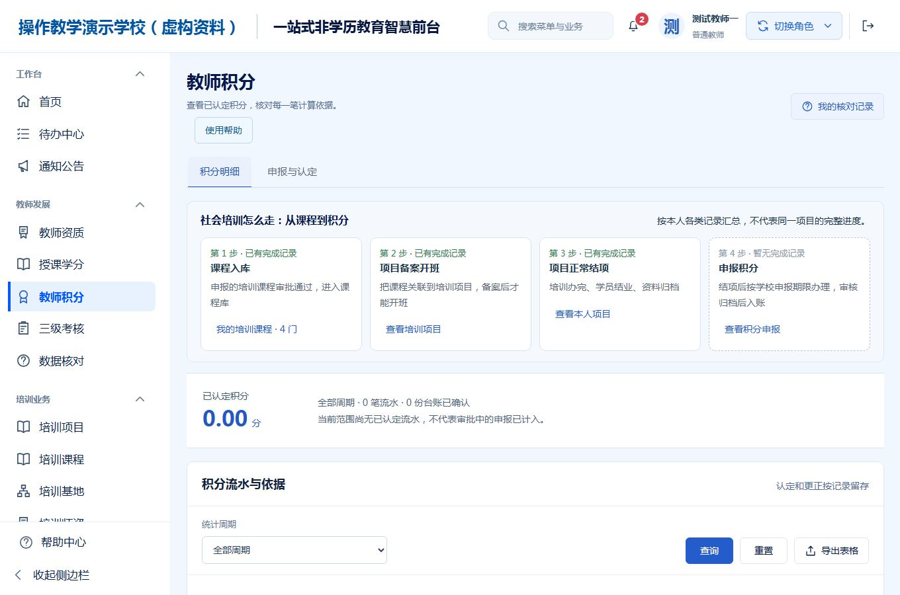
真实页面与填写说明演示（虚构资料）；本段未提交业务，不作为完整审批验收。
按教师、教研室、学院、学校四个环节核对考核结果。
完成标志：可以看到已归档的结果。“审核通过”和“已归档”是两个不同状态。
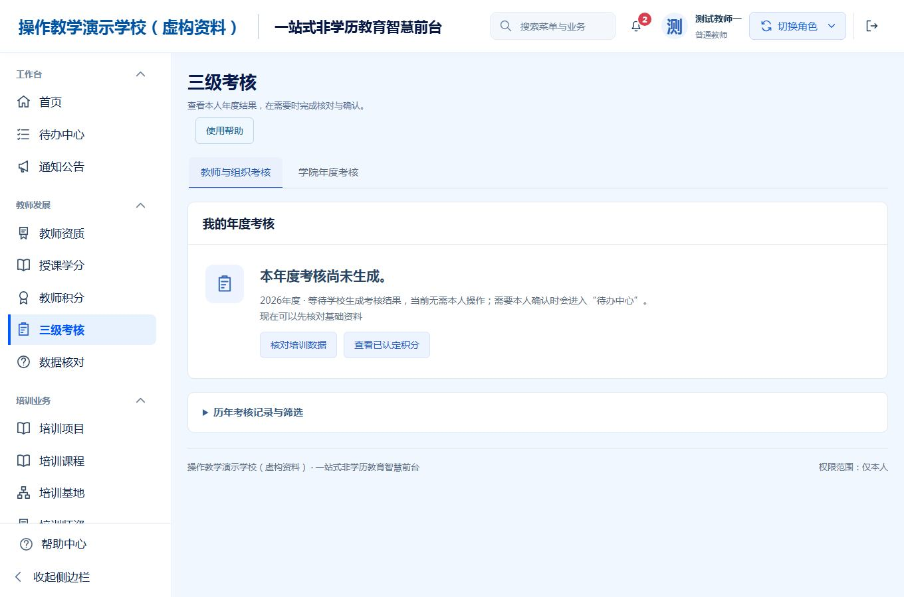
真实页面与填写说明演示（虚构资料）；本段未提交业务，不作为完整审批验收。
学院按年度提交自评和佐证材料，学校按职责核验。
完成标志：看到最终评审和公示状态。学校制度口径没确认前，结果不作为正式结果。
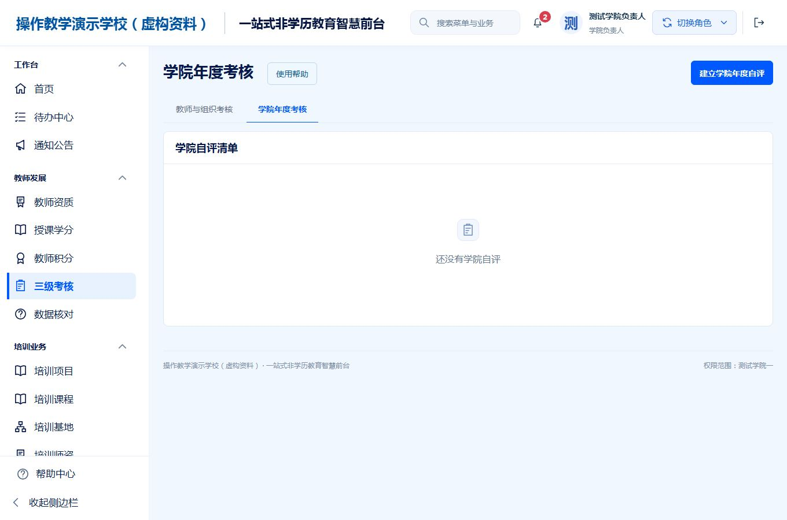
真实页面与填写说明演示（虚构资料）；本段未提交业务，不作为完整审批验收。
真实表单逐项讲解，说明字段含义、示例和条件；使用虚构资料，不提交业务。可通过章节直接跳到某一栏。
下列为采集时的表单条件。实际填写时，以当前选项变化后的必填提示为准。
| 填写项 | 含义、示例和限制 |
|---|---|
| 承办学院 当前必填 | 选择这项业务所属的学院。 |
| 到账收入目标 当前选填 | 填写本年度学校确认的到账收入目标，单位为元。 不能填负数，只能填整数。 |
| 有效人次目标 当前选填 | 填写本年度学校确认的有效人次目标；人次不等于去重后的人数。 不能填负数，只能填整数。 |
| 重点群体人次目标 当前选填 | 填写学校确认的重点群体培训人次目标，并核对重点群体的范围。 不能填负数，只能填整数。 |
| 组织人数基准 当前选填 | 填写本次组织考核使用的人数基准，并在下面写清人数依据。 不能填负数，只能填整数。 |
| 年度任务下达依据 当前必填 | 填写学校下达本年度任务的文件名称、文号或会议纪要，和本页的目标值对应。 最多 1000 字。 |
| 组织人数依据 当前选填 | 说明组织人数按哪一天统计、包括哪些人员、依据什么核对，和学校确认的口径一致。 最多 1000 字。 |
| 单位自评报告 当前必填 | 按本年度实际完成的任务、收入、人次、成果和管理工作逐项说明，写出存在的问题和改进安排，并注明对应佐证。 最多 200 字。 |
| 其他加分 当前选填 | 只填写有正式依据、且没有在其他项目里计过的加分；没有填 0。 不能填负数，最多保留两位小数。 |
| 其他加分依据 当前选填 | 逐项写明申请加分的事项、认定文件和分值，并确认没有在其他项目里重复计分。 最多 1000 字。 |
| 其他已确认不合规次数（不含项目结算核验） 当前选填 | 填写已经确认的不合规次数；项目结算核验里已经反映的问题不要重复计。 不能填负数，只能填整数。 |
| 正式处理或处分依据 当前选填 | 填写已经正式确认的处理或处分文件名称、文号和日期，并说明与本次考核的关系。 最多 1000 字。 |
| 一票否决 当前选填 | 只有学校已经确认属于一票否决情形时才勾选，并在依据里写明正式文件。 |
| 办理说明 当前必填 | 写清这次操作的原因和依据，会记入操作记录，以后可以查到。 最多 2000 字。 |
| 依据说明或材料编号（选填） | 填写依据文件名称、文号或材料编号，方便审核人员查找；不要填写密码或密钥。 示例：学院会议纪要〔2026〕3号、协议编号、材料编号。 最多 2000 字。 |
对数据来源、积分或考核结果有疑问时，提出可追溯的核对。
完成标志：核对事项已办结、相关结果已复查。同一个问题不要重复提交。
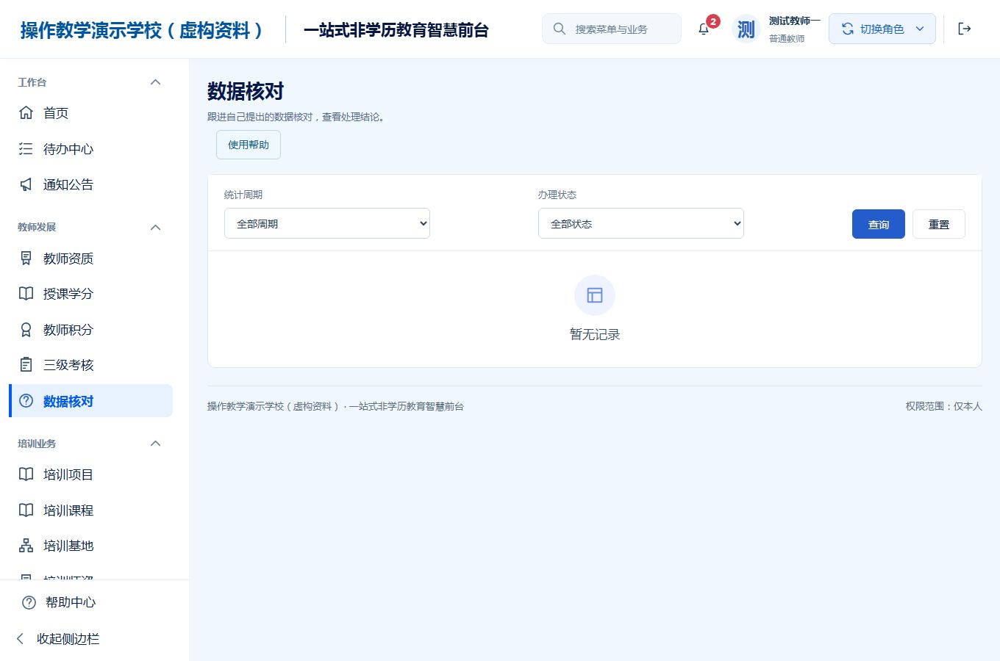
真实页面与填写说明演示（虚构资料）；本段未提交业务，不作为完整审批验收。
按授权范围查看和登记培训记录。
完成标志：记录与依据一致。列表当前页的条数不等于全部数量。
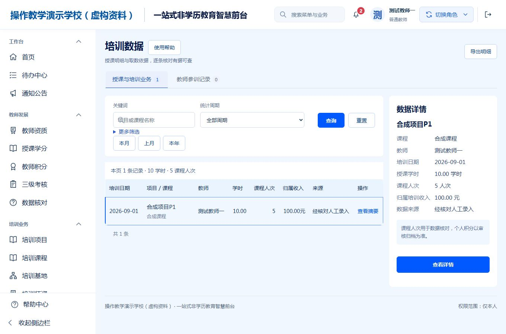
真实页面与填写说明演示（虚构资料）；本段未提交业务，不作为完整审批验收。
真实表单逐项讲解，说明字段含义、示例和条件；使用虚构资料，不提交业务。可通过章节直接跳到某一栏。
下列为采集时的表单条件。实际填写时，以当前选项变化后的必填提示为准。
| 填写项 | 含义、示例和限制 |
|---|---|
| 教师（输入工号或姓名检索） 当前必填 | 输入老师的姓名或工号搜索后选择，核对工号，不要选成同名的人。 |
| 来源唯一编号 当前必填 | 填写能唯一对应这笔记录的编号（例如成果证书编号或登记编号），避免重复登记。 |
| 业务日期 当前必填 | 填写这笔业务实际发生的日期，不要用录入当天代替。 |
| 人工来源说明 当前必填 | 这里登记的记录会标明为人工录入；从接口或表格导入的数据走各自的导入流程，不在这里补录。 可选：经核对人工录入。 |
| 培训项目（名称或编号检索） 当前必填 | 输入项目名称或编号搜索后选择这条记录所属的培训项目。 |
| 项目名称 当前必填 | 填写项目的完整名称，与培训方案一致，例如“2026年社区茶艺公益培训”。 |
| 培训课程（名称或编号检索） 当前必填 | 选择与当前项目对应的课程，核对课程名称。 |
| 课程名称 当前必填 | 填写课程的完整名称，与课程材料一致，例如“社区营养配餐”。 |
| 培训班级（名称或编号检索） 当前必填 | 填写或选择本次教学班编号，与花名册和教学安排一致。 |
| 班级名称 当前必填 | 填写实际教学班名称，与花名册和班级编号对应。 |
| 授课学时 当前必填 | 填写本条记录实际授课的学时，不要把分钟数直接填进来。 不能填负数，最多保留两位小数。 |
| 课程人次 当前必填 | 填写本条记录对应的课程人次；同一人参加不同课程分别计次。 不能填负数，只能填整数。 |
| 归属培训收入（元） 当前必填 | 按已核实的财务依据填写本条记录归属的培训收入，单位为元。 最多保留两位小数。 |
| 办理意见 / 调整原因 当前必填 | 写清这次登记或调整的原因和依据，方便以后核对。 |
| 依据说明或材料编号（选填） | 填写依据文件名称、文号或材料编号，方便审核人员查找；不要填写密码或密钥。 |
登记培训成果和认定依据，供查询和年度考核核验。
完成标志：成果可以查到。登记成功不等于已经计分。
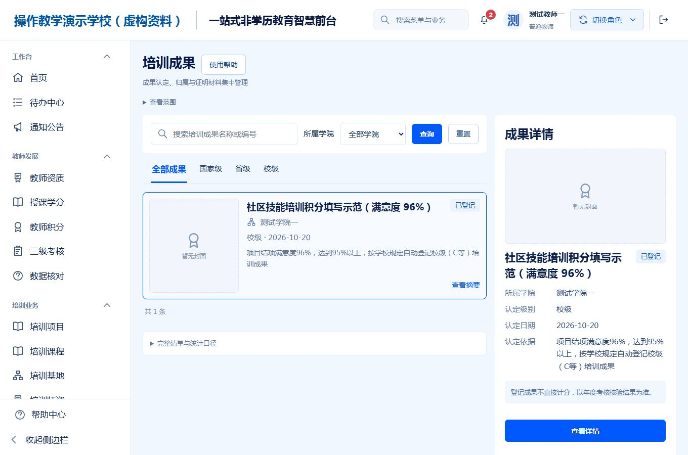
真实页面与填写说明演示（虚构资料）；本段未提交业务，不作为完整审批验收。
真实表单逐项讲解，说明字段含义、示例和条件；使用虚构资料，不提交业务。可通过章节直接跳到某一栏。
下列为采集时的表单条件。实际填写时，以当前选项变化后的必填提示为准。
| 填写项 | 含义、示例和限制 |
|---|---|
| 承办学院 当前必填 | 选择这项业务所属的学院。 |
| 来源唯一编号 当前必填 | 填写能唯一对应这笔记录的编号（例如成果证书编号或登记编号），避免重复登记。 |
| 名称 当前必填 | 填写成果的完整名称，与认定或登记文件一致。 |
| 地点或资源说明 当前选填 | 填写成果对应的地点或资源存放位置，例如网址、档案编号。 |
| 认定或登记依据 当前必填 | 填写成果认定或登记文件的名称、文号和可查找的位置。 |
| 成果等级 当前必填 | 按认定文件选择成果等级（如国家级、省级、校级）。 |
| 成果正式认定日期 当前选填 | 填写成果正式认定的日期；日期还没有时可以先空着，但空着的成果不计入年度分数。 |
| 成果封面（选填） | 可以上传一张成果展示图片，只用于展示，不能代替证明材料。 支持 PNG、JPG，单个不超过 5MB，只能上传 1 份。 |
| 办理说明 当前必填 | 写清这次操作的原因和依据，会记入操作记录，以后可以查到。 最多 2000 字。 |
| 依据说明或材料编号（选填） | 填写依据文件名称、文号或材料编号，方便审核人员查找；不要填写密码或密钥。 示例：学院会议纪要〔2026〕3号、协议编号、材料编号。 最多 2000 字。 |
查看课程视频、资料等资源的汇总。
完成标志：统计与来源一致。视频时长不代表学员的学习时长。
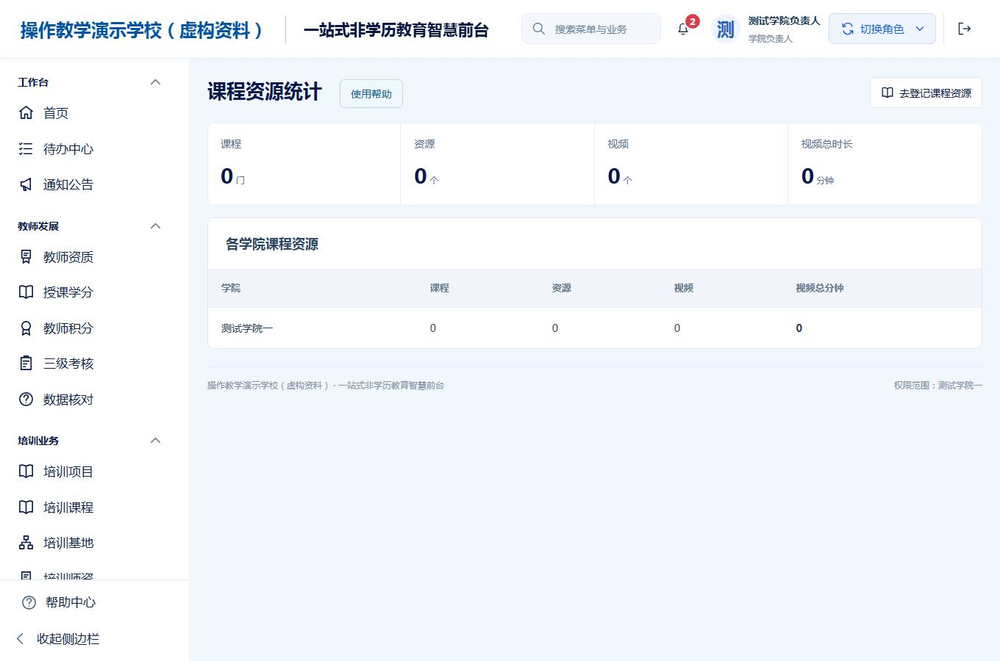
真实页面与填写说明演示（虚构资料）；本段未提交业务，不作为完整审批验收。
查看授权组织内教师和业务的概况。
完成标志：汇总与明细一致，不把本级数据当成全校数据。
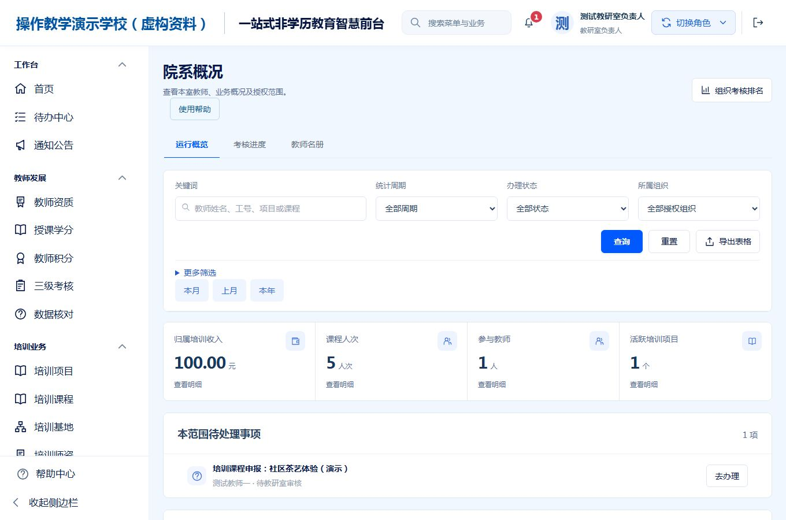
真实页面与填写说明演示（虚构资料）；本段未提交业务，不作为完整审批验收。
核对学院培训台账和统计口径。
完成标志：保存或导出后核对范围，已归档的证据仍然保留。
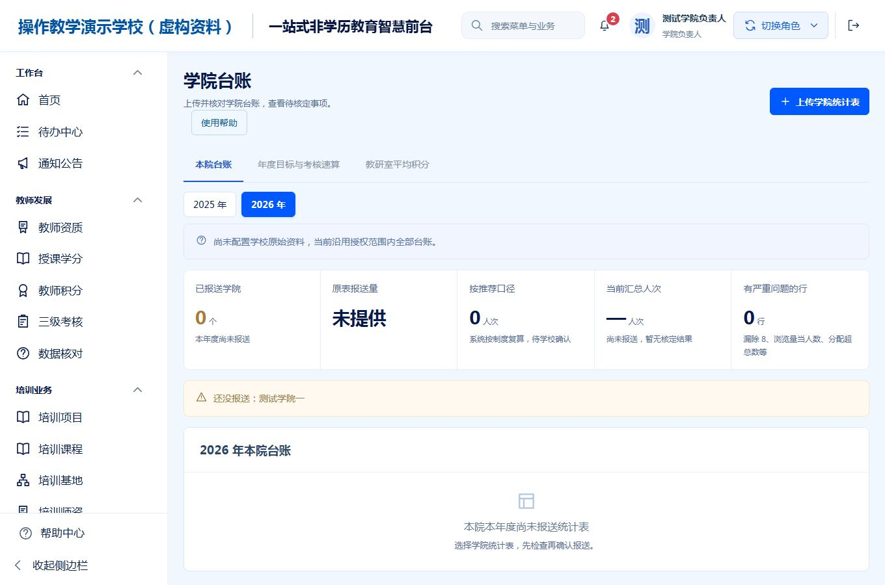
真实页面与填写说明演示（虚构资料）；本段未提交业务，不作为完整审批验收。
查看学校业务指标，并能追溯到明细。
完成标志：能通过明细核对统计结果。
真实页面与填写说明演示（虚构资料）；本段未提交业务，不作为完整审批验收。
学校管理员维护账号、组织机构、角色，以及学院、教研室负责人。
完成标志：被设置的人重新登录后，能在右上角切换到负责人身份并看到本组织的待办。
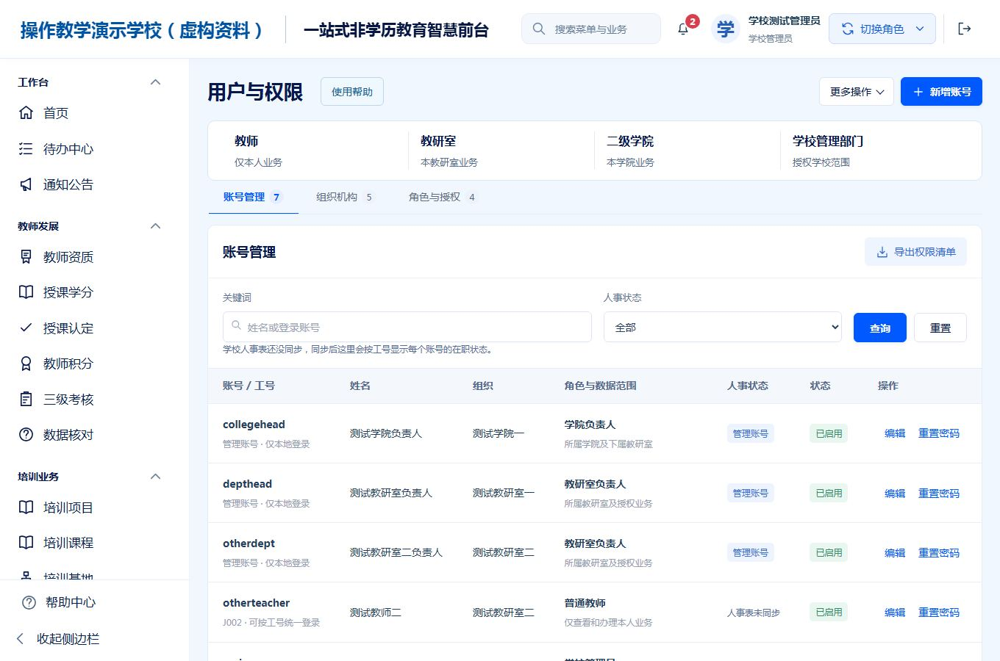
真实页面与填写说明演示（虚构资料）；本段未提交业务，不作为完整审批验收。
真实表单逐项讲解，说明字段含义、示例和条件；使用虚构资料，不提交业务。可通过章节直接跳到某一栏。
下列为采集时的表单条件。实际填写时，以当前选项变化后的必填提示为准。
| 填写项 | 含义、示例和限制 |
|---|---|
| 组织编码 当前必填 | 填写学校统一的组织编码，已有编码不要改，避免与其他组织重复。 |
| 组织层级 当前必填 | 选择这个组织是二级学院还是教研室；层级决定它的上级组织和由谁当负责人。 |
| 组织名称 当前必填 | 填写学院、教研室或部门的正式全称，与学校发文一致。 |
| 上级组织 当前必填 | 选择这个组织的直属上级：学院的上级是学校，教研室的上级是学院。 |
| 办理意见 / 调整原因 当前必填 | 写清这次登记或调整的原因和依据，方便以后核对。 最多 2000 字。 |
| 依据说明或材料编号 当前选填 | 填写依据文件名称、文号或材料编号，方便审核人员查找；不要填写密码或密钥。 示例：学院会议纪要〔2026〕3号、协议编号、材料编号。 |
下列为采集时的表单条件。实际填写时，以当前选项变化后的必填提示为准。
| 填写项 | 含义、示例和限制 |
|---|---|
| 登录账号 当前必填 | 填写学校分配的登录账号，先搜索确认没有重复。 |
| 教师工号 当前选填 | 普通教师账号必须填学校统一工号，保留前面的 0；没有工号的管理账号可以不填。 |
| 临时密码（至少 12 位） 当前必填 | 设置至少 12 位的临时密码，当面或通过安全方式交给本人，本人第一次登录时会被要求修改。 |
| 姓名 当前必填 | 填写本人身份证件上的真实姓名。 |
| 职称 / 岗位 当前选填 | 填写此人现在的职称或岗位，例如“副教授”“教务处科员”。 |
| 角色 当前必填 | 按实际职责选择角色；角色决定能看到哪些菜单和数据范围。 |
| 所属组织 当前必填 | 选择此人所属的组织：老师和教研室负责人选教研室，学院负责人选学院，学校部门人员选学校。 |
| 办理意见 / 调整原因 当前必填 | 写清这次登记或调整的原因和依据，方便以后核对。 最多 2000 字。 |
| 依据说明或材料编号 当前选填 | 填写依据文件名称、文号或材料编号，方便审核人员查找；不要填写密码或密钥。 示例：学院会议纪要〔2026〕3号、协议编号、材料编号。 |
维护经学校确认的制度执行口径。入口：规则配置 → 社会培训制度口径。学校级审批职责统一在“用户与权限 → 学校审批职责”配置。
完成标志：职责配置保存成功，走到学校环节的业务出现在对应人员的待办里；口径按试算、确认、启用的步骤办理，改动用新版本保留历史。
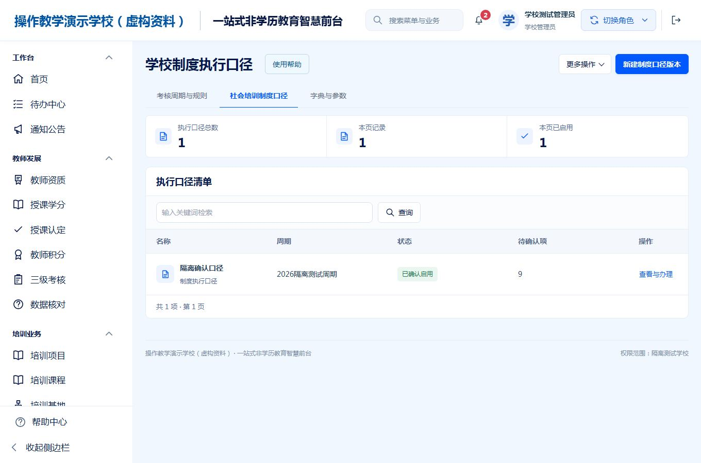
真实页面与填写说明演示（虚构资料）；本段未提交业务，不作为完整审批验收。
真实表单逐项讲解，说明字段含义、示例和条件；使用虚构资料，不提交业务。可通过章节直接跳到某一栏。
下列为采集时的表单条件。实际填写时，以当前选项变化后的必填提示为准。
| 填写项 | 含义、示例和限制 |
|---|---|
| 规则版本名称 当前必填 | 给这个制度口径版本起一个能区分的名称，例如“2026年度社会培训执行口径”。 |
| 适用周期 当前必填 | 选择本次申报、统计或考核对应的周期；周期不一定等于自然年或学年。 |
| 单次积分封顶 当前选填 | 按学校书面解释选择单次积分是否封顶、怎样封顶。 可选：人次÷标准人数，最高2、超过标准人数直接按2。 |
| 人天式单次范围 当前选填 | 选择人天式计算里“单次”指一天还是一个项目，按学校确认的口径选。 可选：每个培训日、整个项目期次。 |
| 单元积分及汇总精度 当前选填 | 选择积分计算和汇总保留几位小数，与学校制度一致。 可选：逐单元及汇总均保留两位（须学校确认）。 |
| 舍入方式 当前选填 | 按学校确认的规则选择四舍五入或其他舍入方式。 |
| 辅助工作重叠 当前选填 | 选择同一天同时做多项辅助工作时能否累计积分，按学校确认口径选。 可选：同一工作不得重复计分。 |
| 不足计分步长 当前选填 | 选择不足一个计分步长时怎么处理，按学校书面解释选。 可选：按比例计算、只计算完整步长。 |
| 学院考核模型 当前选填 | 选择学校正式采用的学院年度考核计算模型，启用前先试算核对。 可选：收入、人次、成果、资金管理四项。 |
| 总加分规则 当前选填 | 选择各类加分怎样汇总、受什么上限约束，按学校考核办法选。 可选：所有单项加分共用10分上限。 |
| 考核等次 当前选填 | 选择考核等次的划分方式（如四等制、三等制），并核对分数线。 可选：优秀、合格、不合格；优秀、良好、合格、不合格。 |
| 恰好95%满意度 当前选填 | 选择满意度正好 95% 时算不算达标，按学校对边界值的书面解释选。 可选：可以认定成果、不认定，须超过95%。 |
| 成果去重 当前选填 | 选择同一项成果多次出现时按什么范围去重，避免重复计分。 可选：同一成果依据仅取最高等级。 |
| 年度总分上限 当前选填 | 填写学校确认的年度总分上限，并确认是否包含加分。 不能填负数，最多保留两位小数。 |
| 三等制优秀门槛 当前选填 | 填写三等制里“优秀”的起始分数，要高于合格分数线。 不能填负数，最多保留两位小数。 |
| 三等制合格门槛 当前选填 | 填写三等制里“合格”的起始分数，要低于优秀分数线。 不能填负数，最多保留两位小数。 |
| 职称折算范围 当前选填 | 选择职称折算用于哪些积分项目，不要自行扩大范围。 可选：仅授课积分、授课及辅助积分。 |
| 学院人次口径 当前选填 | 选择学院汇总用项目人次还是其他确认口径；人次和去重人数不要混用。 可选：按项目核算单元汇总，不重复累计教师。 |
| 年度归属 当前选填 | 选择业务按哪个日期归属年度（如结项日期），按学校确认的规则选。 |
| 职称折算小数位 当前选填 | 选择职称折算结果保留几位小数。 可选：整数、一位、两位、三位、四位。 |
| 职称折算舍入 当前选填 | 选择职称折算的舍入方式，与学校确认规则一致。 可选：四舍五入。 |
| 退回补正期限依据 当前选填 | 选择退回补正的期限从哪一天开始算，按学校文件选，不要自己定期限。 可选：按首次申报日期、按补正再次提交日期。 |
| 本口径适用开始日期 当前选填 | 填写这个口径从哪一天开始执行；之前的历史结果不受影响。 |
| 校历开始日期 当前选填 | 填写这份校历覆盖的第一天。 |
| 校历结束日期 当前选填 | 填写这份校历覆盖的最后一天，不能早于开始日期。 |
| 放假日期（每行一个） 当前选填 | 填写校历区间内的放假日期，每行一个，例如 2026-10-01；同一天不能既放假又补班。 |
| 周末补班日期（每行一个） 当前选填 | 填写需要上班的周末补班日期，每行一个，不能和放假日期重复。 |
| 学校工作日历依据 当前选填 | 填写学校校历或调休通知的名称、文号，作为计算工作日的依据。 |
| 学校书面解释依据 当前选填 | 填写学校确认本口径的正式文件或会议记录，不能只写“按规定”。 |
| 办理说明 当前必填 | 写清这次操作的原因和依据，会记入操作记录，以后可以查到。 最多 2000 字。 |
| 依据说明或材料编号（选填） | 填写依据文件名称、文号或材料编号，方便审核人员查找；不要填写密码或密钥。 示例：学院会议纪要〔2026〕3号、协议编号、材料编号。 最多 2000 字。 |
下列为采集时的表单条件。实际填写时，以当前选项变化后的必填提示为准。
| 填写项 | 含义、示例和限制 |
|---|---|
| 选择要调整的职责 当前选填 | 先选要配置的审批职责（例如归口学院复审、分管副校长、教学秘书），下面的已选办理人和候选名单会随之切换。没配人的职责会在表单顶部提示。 可选：二级学院院长、归口学院复审、分管副校长、教学秘书、财务核验、成果核验、纪检核验、委员会评审、培训师资格认定（组织人事部）、外聘培训师备案（教务处）。 |
| 搜索姓名、工号或账号 当前选填 | 输入姓名、工号或登录账号，点“查询”找人；名单分页显示，翻页或换关键词时已勾选的人会保留。 |
| 选择办理人（可多选） 当前选填 | 在搜索结果里勾选这个职责的办理人，可以选多位，任何一位办理即生效。名单里灰色、不能勾选的人，是还没有“学校”类型且带审核权限的有效身份，或者所属组织不在你的管理范围内，需要先在“用户与权限”里给他添加相应的兼任身份。建议每个职责至少配两位：申请人是本人或申报过利益冲突时要回避，只有一位的话，他回避后这一环节就没人能办。 |
| 办理说明 当前必填 | 写清这次操作的原因和依据，会记入操作记录，以后可以查到。 最多 2000 字。 |
| 依据说明或材料编号（选填） | 填写依据文件名称、文号或材料编号，方便审核人员查找；不要填写密码或密钥。 示例：学院会议纪要〔2026〕3号、协议编号、材料编号。 最多 2000 字。 |
按学校确认的考核办法配置周期和计算规则。
完成标志：规则启用、试算结果核对无误。不要用默认值代替学校决定。
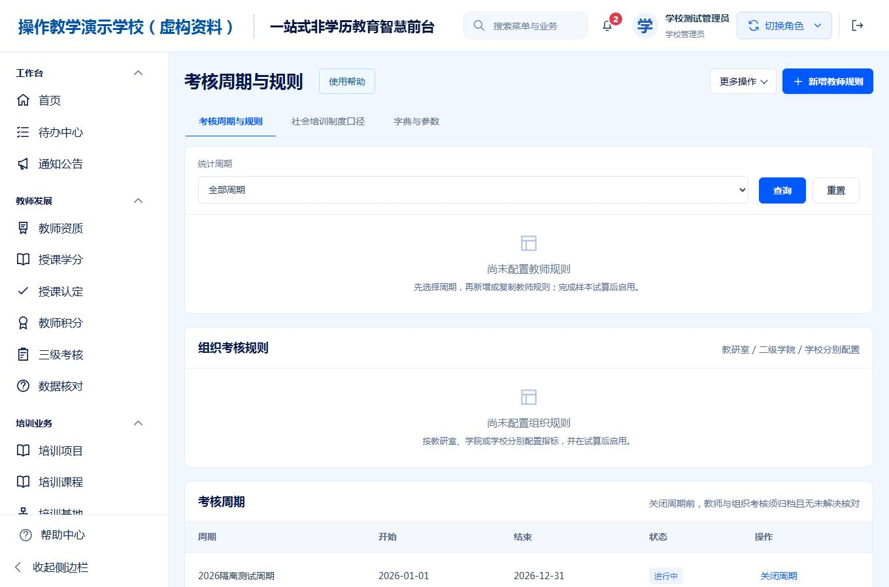
真实页面与填写说明演示（虚构资料）；本段未提交业务，不作为完整审批验收。
真实表单逐项讲解，说明字段含义、示例和条件；使用虚构资料，不提交业务。可通过章节直接跳到某一栏。
下列为采集时的表单条件。实际填写时，以当前选项变化后的必填提示为准。
| 填写项 | 含义、示例和限制 |
|---|---|
| 周期名称 当前必填 | 给考核周期起一个能区分的名称，例如“2026年度”。 |
| 开始日期 当前必填 | 填写实际开始日期。 |
| 结束日期 当前必填 | 填写实际结束日期，不能早于开始日期。 |
| 办理意见 / 调整原因 当前必填 | 写清这次登记或调整的原因和依据，方便以后核对。 最多 2000 字。 |
| 依据说明或材料编号 当前选填 | 填写依据文件名称、文号或材料编号，方便审核人员查找；不要填写密码或密钥。 示例：学院会议纪要〔2026〕3号、协议编号、材料编号。 |
下列为采集时的表单条件。实际填写时，以当前选项变化后的必填提示为准。
| 填写项 | 含义、示例和限制 |
|---|---|
| 考核对象 当前必填 | 选择这条规则考核的对象：教研室、学院还是学校。 可选：教研室、二级学院、学校。 |
| 规则名称 当前必填 | 给这条规则起一个能区分的名称，例如“2026年度教研室考核”。 |
| 适用周期 当前必填 | 选择本次申报、统计或考核对应的周期；周期不一定等于自然年或学年。 |
| 指标名称 当前必填 | 填写学校考核细则里的指标名称，名称要能看出考核什么。 |
| 数据来源 当前选填 | 选择这个指标从哪里取数，例如授课学时、课程人次；核对统计范围，不使用没有确认的来源。 可选：授课学时、课程人次、归属培训收入、参与教师数、培训项目数、课程数、有效资质数、本期积分、已归档教师考核平均分。 |
| 考核权重 当前必填 | 按学校确认的考核规则填写权重，各指标权重合计核对无误。 不能填负数，不能大于 100，最多保留两位小数。 |
| 目标值 当前必填 | 填写学校考核细则规定的达标值，不要用演示数值。 不能小于 0.0001，最多保留四位小数。 |
| 评分方式 当前选填 | 按学校确认的规则选择评分方式；切换方式后只需要填写当前方式用到的参数。 可选：达标比例 × 权重、原始值 × 系数、分档、扣分、加分。 |
| 分档（门槛:分值，逗号分隔） 按前面的选择才需要填 | 按学校确认的分档填写“门槛:分值”，多档用逗号隔开，例如 60:10,80:20；实际门槛和分值以学校文件为准。 |
| 分档计分方式 按前面的选择才需要填 | 按学校确认的办法选择：只取达到的最高一档，还是各档累加。 可选：命中档直接得分、命中档系数。 |
| 起始分 按前面的选择才需要填 | 填写计算加分或扣分的起始分数，按正式规则设置。 最多保留两位小数。 |
| 计数单位 按前面的选择才需要填 | 填写每满多少计一次，例如每满 1 次、每满 10 人次，按学校确认的规则填写。 不能小于 0.0001，最多保留四位小数。 |
| 每次扣/加分 按前面的选择才需要填 | 填写每计一次加或扣多少分，同时核对封顶和保底。 不能填负数，最多保留两位小数。 |
| 保底 按前面的选择才需要填 | 填写本项最低得分（保底分），按正式规则设置。 最多保留两位小数。 |
| 封顶 按前面的选择才需要填 | 填写本项最多能得多少分；不封顶时留空。 不能填负数，最多保留两位小数。 |
| 办理意见 / 调整原因 当前必填 | 写清这次登记或调整的原因和依据，方便以后核对。 最多 2000 字。 |
| 依据说明或材料编号 当前选填 | 填写依据文件名称、文号或材料编号，方便审核人员查找；不要填写密码或密钥。 示例：学院会议纪要〔2026〕3号、协议编号、材料编号。 |
下列为采集时的表单条件。实际填写时，以当前选项变化后的必填提示为准。
| 填写项 | 含义、示例和限制 |
|---|---|
| 规则类型 当前必填 | 选择这条规则用于教师积分还是三级考核。 |
| 规则名称 当前必填 | 给这条规则起一个能区分的名称，例如“2026年度教研室考核”。 |
| 适用周期 当前必填 | 选择本次申报、统计或考核对应的周期；周期不一定等于自然年或学年。 |
| 指标名称 当前必填 | 填写学校考核细则里的指标名称，名称要能看出考核什么。 |
| 指标数据来源 当前选填 | 选择这个指标从哪里取数，核对统计范围，不使用没有确认的来源。 可选：授课学时、课程人次、归属培训收入、有效资质数、上一已归档考核分、授课学分（教务+超星）。 |
| 积分系数 当前必填 | 填写学校确认的计算系数，先试算核对再启用。 不能填负数，最多保留四位小数。 |
| 考核权重 按前面的选择才需要填 | 按学校确认的考核规则填写权重，各指标权重合计核对无误。 不能填负数，不能大于 100，最多保留两位小数。 |
| 考核达标值 按前面的选择才需要填 | 填写学校确认的达标值，不要用演示数值。 不能小于 0.0001，最多保留四位小数。 |
| 上限 / 封顶 当前选填 | 填写本项积分上限；不限时留空。 不能填负数，最多保留两位小数。 |
| 评分方式 当前选填 | 按学校确认的规则选择评分方式；切换方式后只需要填写当前方式用到的参数。 可选：达标比例 × 权重、原始值 × 系数、分档、扣分、加分。 |
| 分档（门槛:分值，逗号分隔） 按前面的选择才需要填 | 按学校确认的分档填写“门槛:分值”，多档用逗号隔开，例如 60:10,80:20；实际门槛和分值以学校文件为准。 |
| 分档计分方式 按前面的选择才需要填 | 按学校确认的办法选择：只取达到的最高一档，还是各档累加。 可选：命中档直接得分、命中档系数。 |
| 起始分 按前面的选择才需要填 | 填写计算加分或扣分的起始分数，按正式规则设置。 最多保留两位小数。 |
| 计数单位 按前面的选择才需要填 | 填写每满多少计一次，例如每满 1 次、每满 10 人次，按学校确认的规则填写。 不能小于 0.0001，最多保留四位小数。 |
| 每次扣/加分 按前面的选择才需要填 | 填写每计一次加或扣多少分，同时核对封顶和保底。 不能填负数，最多保留两位小数。 |
| 保底 按前面的选择才需要填 | 填写本项最低得分（保底分），按正式规则设置。 最多保留两位小数。 |
| 办理意见 / 调整原因 当前必填 | 写清这次登记或调整的原因和依据，方便以后核对。 最多 2000 字。 |
| 依据说明或材料编号 当前选填 | 填写依据文件名称、文号或材料编号，方便审核人员查找；不要填写密码或密钥。 示例：学院会议纪要〔2026〕3号、协议编号、材料编号。 |
用学校模板导入数据：上传、校验预览、确认入库。
完成标志：显示入库结果。只上传或只预览成功，数据还没有入库。
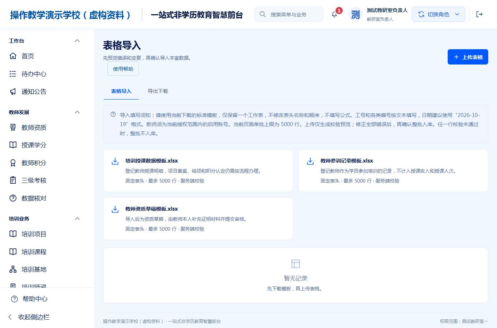
真实页面与填写说明演示（虚构资料）；本段未提交业务，不作为完整审批验收。
真实表单逐项讲解，说明字段含义、示例和条件；使用虚构资料，不提交业务。可通过章节直接跳到某一栏。
下列为采集时的表单条件。实际填写时，以当前选项变化后的必填提示为准。
| 填写项 | 含义、示例和限制 |
|---|---|
| 导入类型 当前必填 | 选择这次要导入哪类数据；类型要和下载的模板一致，否则校验不通过。 可选：培训授课数据、教师参训记录、教师资质草稿。 |
| 标准电子表格文件 当前必填 | 上传按当前模板填好的表格文件，不要改表头。 支持 Excel 表格（.xlsx）。 |
下列为采集时的表单条件。实际填写时，以当前选项变化后的必填提示为准。
| 填写项 | 含义、示例和限制 |
|---|---|
| 导入类型 当前必填 | 选择这次要导入哪类数据；类型要和下载的模板一致，否则校验不通过。 可选：培训授课数据、教师参训记录、教师资质草稿、教师账号（停用待配置）。 |
| 标准电子表格文件 当前必填 | 上传按当前模板填好的表格文件，不要改表头。 支持 Excel 表格（.xlsx）。 |
查看导出任务，下载本人有权限的文件。
完成标志：文件能打开、范围正确。没完成的任务不能下载。
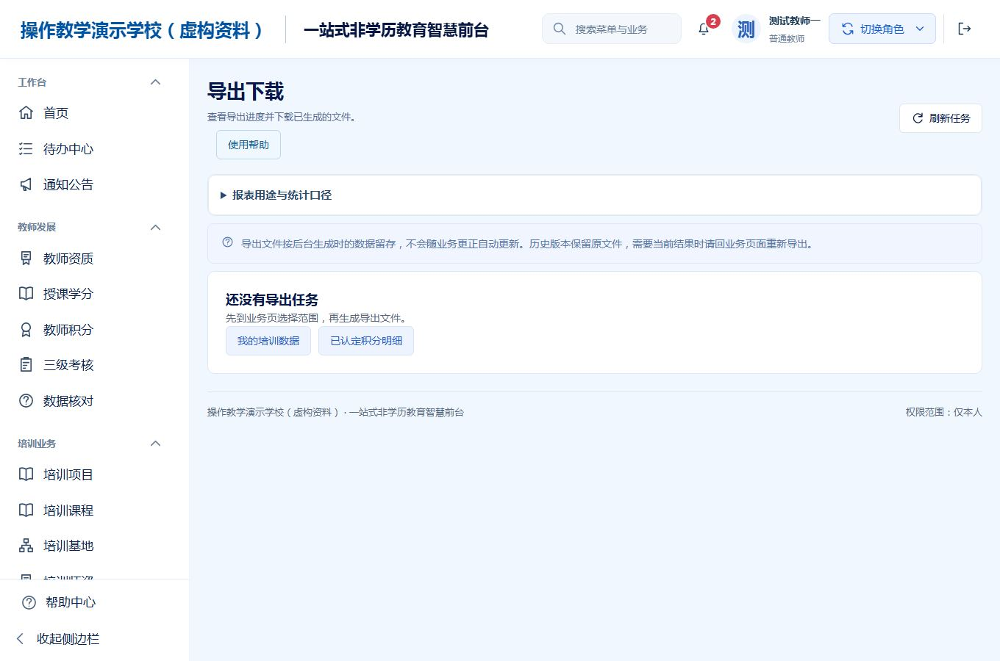
真实页面与填写说明演示（虚构资料）；本段未提交业务，不作为完整审批验收。
维护业务选项和基础参数。
完成标志：配置保存成功，相关业务的选项正确。
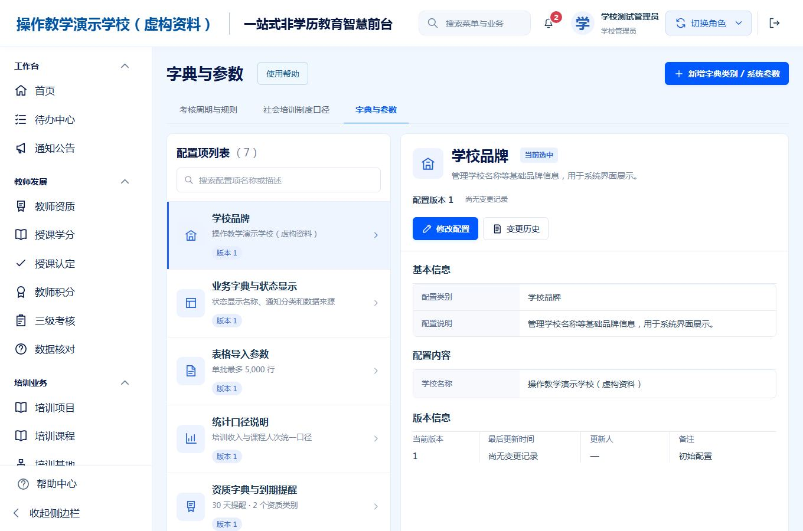
真实页面与填写说明演示（虚构资料）；本段未提交业务，不作为完整审批验收。
查看通知；有权限的人员发布业务通知。
完成标志：通知在指定范围内可见。通知不是审批结果。
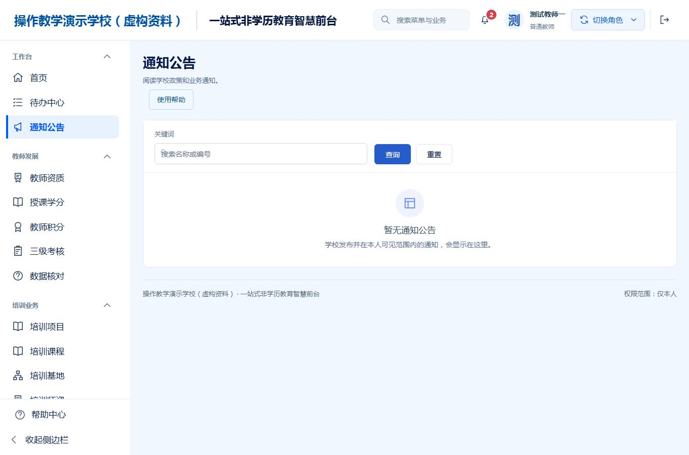
真实页面与填写说明演示（虚构资料）；本段未提交业务，不作为完整审批验收。
真实表单逐项讲解，说明字段含义、示例和条件；使用虚构资料，不提交业务。可通过章节直接跳到某一栏。
下列为采集时的表单条件。实际填写时，以当前选项变化后的必填提示为准。
| 填写项 | 含义、示例和限制 |
|---|---|
| 通知标题 当前必填 | 用一句话概括通知内容，例如“关于开展2026年社会培训项目申报的通知”。 |
| 分类 当前必填 | 选择通知的分类，方便大家按分类查找。 可选：业务通知、政策通知、操作通知。 |
| 发布范围（可多选） 当前必填 | 勾选能看到这条通知的学院、教研室或学校部门，可以多选；点“全选”一次选中全部。发布前核对范围，避免发给无关人员。 |
| 通知正文 当前必填 | 写清通知对象、事项、时间、材料要求和联系部门，发布前再核对一遍。 |
| 发布状态 当前选填 | 内容和范围核对无误后再选择发布；保存为草稿时相关人员还看不到。 |
| 办理原因 当前必填 | 写清这次操作的原因，会记入操作记录。 |
| 依据说明或材料编号 当前选填 | 填写依据文件名称、文号或材料编号，方便审核人员查找；不要填写密码或密钥。 |
查询操作记录，定位异常。
完成标志：找到可追溯的记录。日志不能代替业务办理状态。
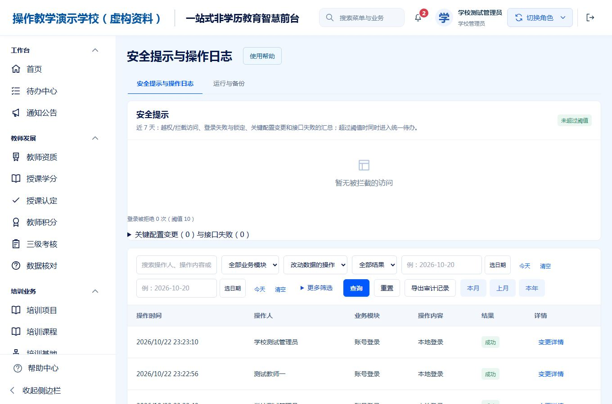
真实页面与填写说明演示（虚构资料）；本段未提交业务，不作为完整审批验收。
区分本地配置、真实连接、数据采集和入库。
完成标志：真实连接和业务结果都有证据。本地校验通过不等于已接通。
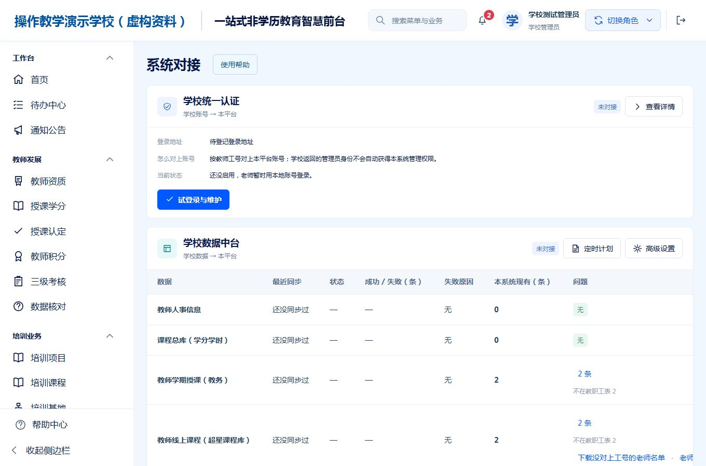
真实页面与填写说明演示（虚构资料）；本段未提交业务，不作为完整审批验收。
供获授权的实施人员核对对接材料和配置。
完成标志：真实联调并回读通过后，才能报告已接通。
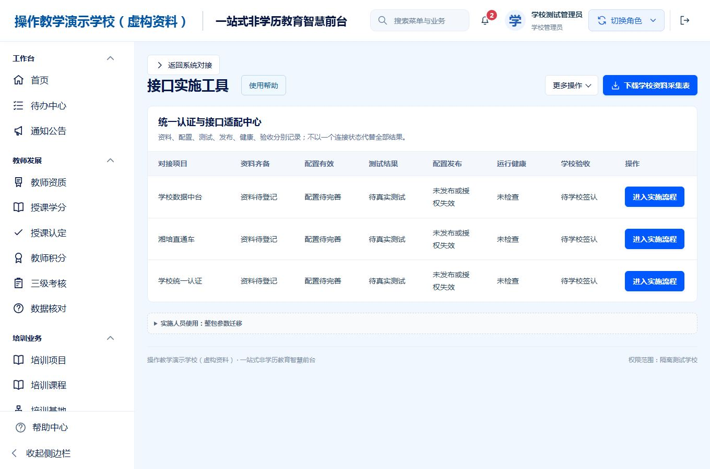
真实页面与填写说明演示（虚构资料）；本段未提交业务，不作为完整审批验收。
核对统一登录的条件和认证结果。
完成标志：能正常登录，身份和权限正确。没有真实接入时联系信息中心。
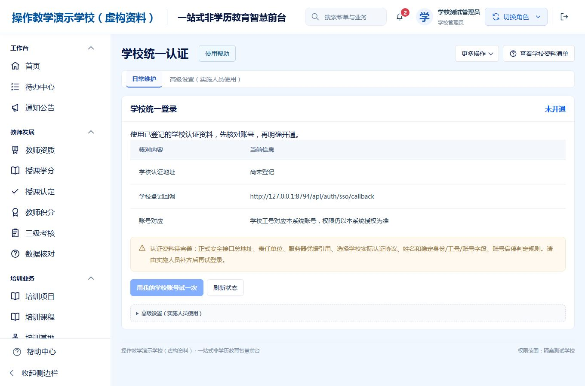
真实页面与填写说明演示（虚构资料）；本段未提交业务，不作为完整审批验收。
核对采集来源、字段映射和入库结果。
完成标志：采集完成和确认入库分别检查，不能只看任务创建成功。
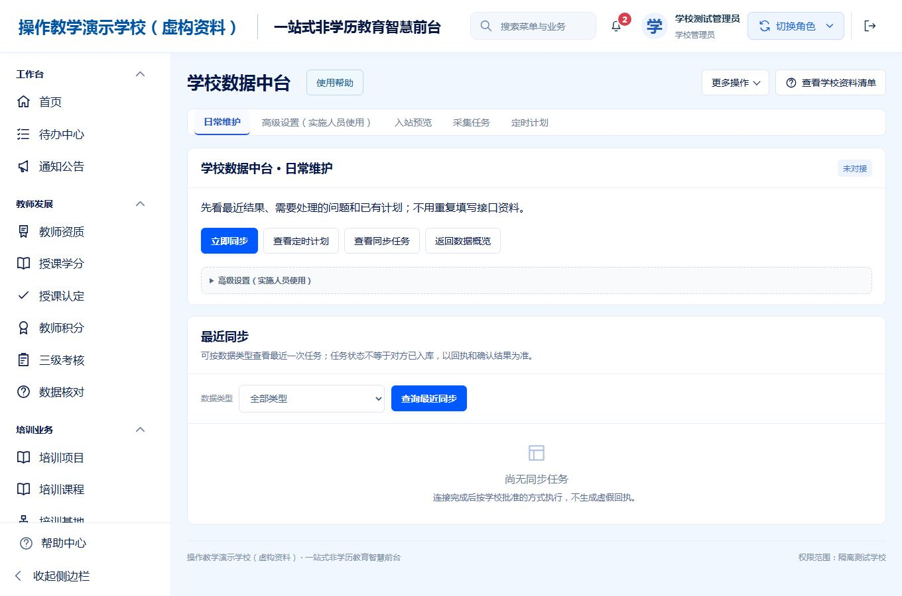
真实页面与填写说明演示（虚构资料）；本段未提交业务，不作为完整审批验收。
按省级平台规范查看同步任务和回执。
完成标志：以省级平台的真实回执为准；接口没接通时不会有成功同步。
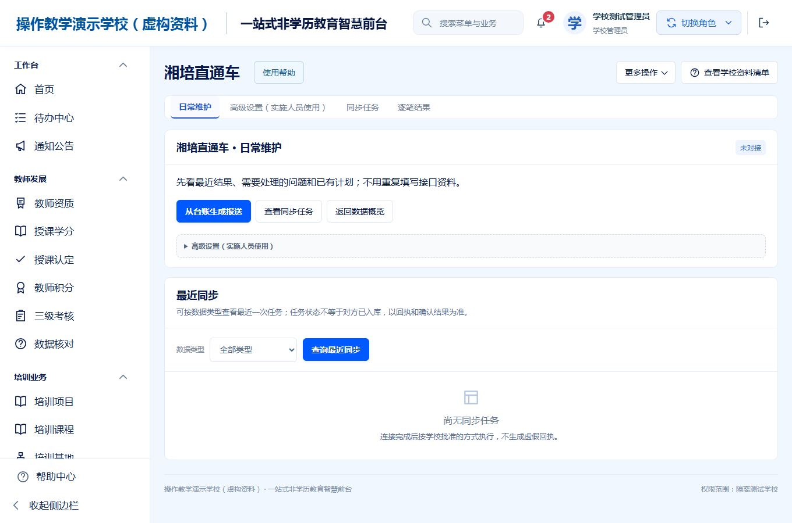
真实页面与填写说明演示（虚构资料）；本段未提交业务，不作为完整审批验收。
准备对接需要的责任人、规范和验收材料。
完成标志：资料齐全、责任明确。资料登记不等于联调完成。
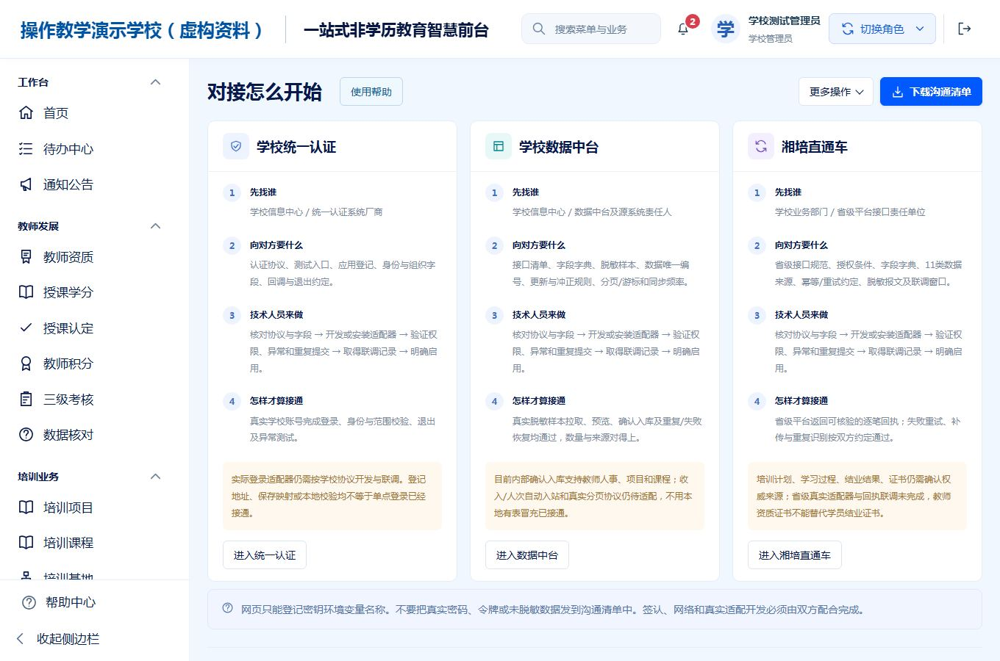
真实页面与填写说明演示（虚构资料）；本段未提交业务，不作为完整审批验收。
查看运行状态和备份记录，异常由授权运维人员处理。
完成标志：状态和告警已核对。本教程不指导覆盖数据库或上线发布。
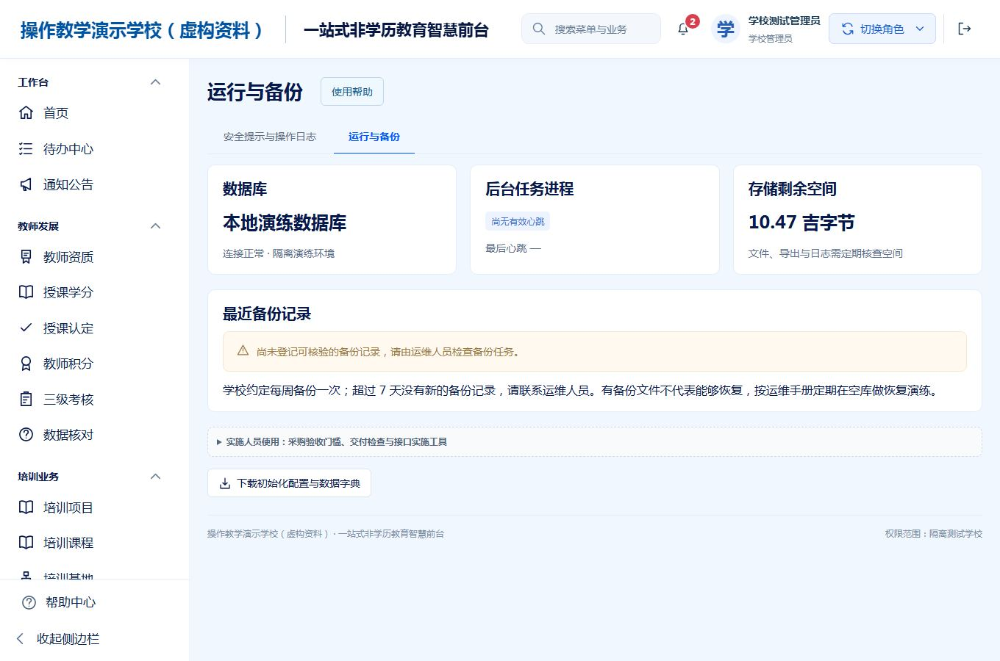
真实页面与填写说明演示（虚构资料）；本段未提交业务，不作为完整审批验收。
按身份、业务或问题查找图文说明和视频。
完成标志：找到对应的教程。办理时也可以随时从左下角“帮助中心”进入。
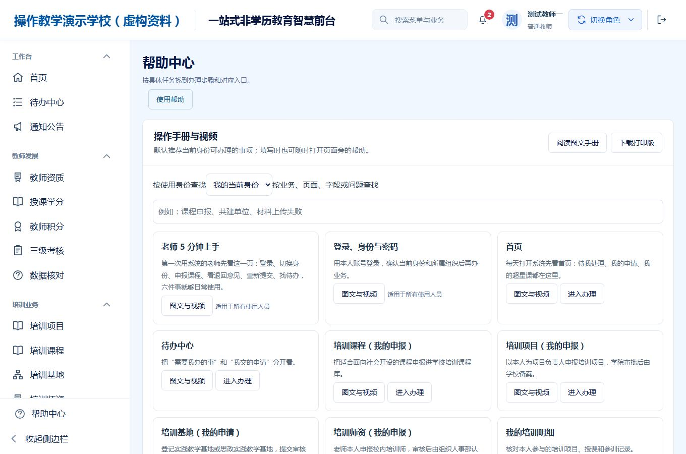
真实页面与填写说明演示（虚构资料）；本段未提交业务，不作为完整审批验收。
打开项目，点“项目运行”进入运行档案，再点“申请变更”，只勾要改的项（延期、换负责人、预估人次、预计收入、场地等）。小变动直接生效并留痕，一般变动由学院审批，核心变动学院审批后报学校备案。审批期间项目照常运行；通过后生成新版本，改前改后都能查。预估人次、预计收入是和上次审批通过时的值比，连续小改动会累计。
在对应的详情里点“项目运行 / 课程运行 / 基地运行 / 师资运行”：项目可以上传运行材料（签到表、开班照片等），也可以随时“申请变更”；课程、基地、师资点“记一笔”随手记开班、加课、检查、整改，不用审批；基地、师资每年做一次“年度确认”。运行档案里的时间线会标明每一笔是本人、学院、学校还是系统自动记的。
在运行档案里点“停用”并写原因。停用不是作废，历史数据和已开过的课都保留，已有的课程积分照常办理；停用的课程不能再导入新的参训明细，需要时点“恢复运行”。有变更正在审批时要先撤回变更再停用。
立项只要求能判断项目的基本信息；总学时、受众群体、服务面向类型、教学实施方式可以先空着，项目负责人在备案后、结项前补齐即可，结项提交时系统会再检查一次。
先看右上角的当前身份：兼任负责人的老师，办审核要切换到负责人身份，办本人申报要切回教师身份。菜单只显示当前身份有权限的项目；切换后还是没有，请学校管理员核对你的账号和角色，不要借用别人的账号。
点左侧“工作台 → 待办中心”，选“我的申请”；或者在首页点“我的申请”。打开申请就能看到现在在哪个环节、由谁办理，以及每一步的办理记录。
积分要走完“教研室 → 学院 → 学校”三级审核，学校认定通过后才进入个人台账；还在审核中不会显示到账。项目要先结项通过，老师才能申报积分；申报时提示没有积分认定口径或没有可选周期的，请联系学校管理员核对是否已建立开放的考核周期、是否已启用积分认定口径。另外，培训课程入库本身不产生积分，积分按你在培训项目里的授课人次认定。
先看文件格式和大小：一般支持 PDF、PNG、JPG，单个不超过 10MB（封面图片不超过 5MB）。文件太大可以压缩或分成几份；文件名里不要有特殊符号。每份文件单独显示上传结果，只需补传失败的那一份，已经成功的不用重传。
打开原申请看退回意见，点“补正资料”只改指出的问题，原来正确的内容和附件保留；保存后一定要点“重新提交”。不要另外新建一份。
“保存草稿”和“提交”是两个动作。保存草稿只是自己留着，审核人看不到；要点“提交”或“重新提交”才会送到下一环节。
不用。同一组织可以设几位负责人，任何一位办理后这一环节就完成了，其他负责人在“已办”里能看到是谁办的。
本人的事项必须回避，由同组织其他负责人办理；教研室、学院没有其他能办的负责人时，系统交给上一级代办。学校级职责缺人时需要管理员配置，不能跳过。以申请详情里显示的办理人为准。
“我的超星课”只显示你作为建课人的课程。超星账号用的不是本名或工号时，到“授课学分 → 超星课程”点“认领我的超星课程”，只填超星登录名，不需要超星密码。姓名一致也需学校管理员核对建课人身份，确认后才生效。
看申请详情里的当前环节。学校环节没人办，是对应审批职责还没配人，请联系学校管理员在“用户与权限 → 学校审批职责”里给对应职责添加办理人，不要重复提交。
可以先“保存草稿”。离开前系统会提醒未保存的内容；附件在保存前没有上传，回来后可能需要重新选择。打开帮助不会离开表单，也不会清掉已填内容。
先核对统计周期、组织、身份和筛选条件。缺少来源数据或还没认定，不等于零；确实有疑问，从那条记录进入“数据核对”提出。
逐条看结果和原因，只重新办理失败的那几条，不要把点过批量按钮当成全部成功。